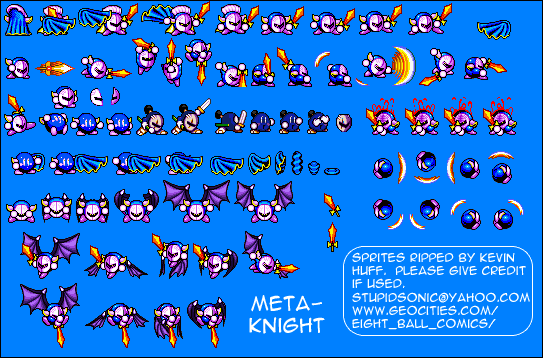

#17955 1 2007-11-18T08:03:35Z Arona Daal If this has already been asked, take off a post or warn me or w/e.
Just joined, wanted to know how to submit N maps.
#380487 5877 2007-11-18T08:17:10Z Arona Daal I don't know how to insert a text file = \
sorry it's huge, really dirty, I had a great idea but It got out of hand. I don't really want to scrap it since I worked a long time making it more difficult, then easier, till it got all messy. Wanted to make a nice map with a large, open feel to it with minimal terrain to get in the way.
Rated Condog_111 7/10: Good concept, but I don't like mine dodgers much. Maybe it's just me.
Quote
$Arona Daal#Discord##00000000000000000000000000000000000000000000005000000020000000000000000000000000000000000000000000000000000000000000000000000000000000000000000000000000000000000000000000000000000000000000000000000000000000000000000000000000000000000000000000000000000000000000000000000000000000000000000000000000000000000000000000000000000000000000000000000000000000000000000000000000000000000000000000000000000000000000000000000000000000000000000000000000000000000000000000000000000000000000000000200000000000000000000000000000000000000000000000000000000000000000000000000000000000000000000000000000000000000000000000000000000000000000000000000000000000000000000000000000000000000000000000000000000000000200000000000000000000000|5^36,564!7^36,540,3!7^60,540,3!7^60,540,0!7^60,564,0!7^36,492,3!7^60,492,3!7^60,492,0!7^60,516,0!7^84,492,3!7^108,492,3!7^108,492,0!7^108,516,0!7^108,540,0!7^108,564,0!7^108,444,0!7^108,468,0!7^36,444,3!7^60,444,3!7^36,396,3!7^132,396,2!7^132,420,2!7^36,348,3!7^60,348,3!7^84,348,2!7^84,324,1!7^108,324,1!7^132,348,2!7^132,372,2!7^132,516,1!7^156,516,1!7^156,540,0!7^156,564,0!7^180,540,3!7^204,540,3!7^132,468,1!7^156,420,1!7^132,372,1!7^156,372,1!7^180,372,2!7^180,444,2!7^180,468,2!7^204,492,3!7^204,492,0!7^204,516,0!7^180,444,3!7^204,444,3!7^228,444,2!7^228,468,2!7^252,540,3!7^228,492,3!7^276,540,2!7^276,564,2!7^300,516,1!7^60,324,0!7^84,276,1!7^108,276,1!7^348,492,3!7^348,540,3!7^372,516,2!7^396,540,3!7^396,540,0!7^396,564,0!7^420,540,3!7^444,540,3!7^468,540,2!7^468,564,2!7^420,516,2!7^420,492,2!7^276,468,1!7^300,468,1!7^276,468,2!7^276,444,2!7^252,420,0!7^252,396,0!7^276,372,2!7^276,348,2!7^228,324,1!7^252,324,1!7^204,372,0!7^204,396,3!7^204,396,0!7^204,420,0!7^228,372,1!7^252,372,1!7^180,300,2!7^180,324,2!7^180,276,1!7^228,300,2!7^228,324,2!7^228,300,3!7^252,300,3!7^276,348,3!7^300,348,3!7^276,276,1!7^300,276,1!7^324,300,2!7^324,324,2!7^300,348,0!7^300,372,0!7^324,396,2!7^324,420,2!7^300,444,0!7^300,468,0!7^276,420,1!7^300,420,1!7^324,444,3!7^348,444,3!7^348,444,0!7^348,468,0!7^444,492,3!7^420,444,3!7^444,444,3!7^324,276,1!7^348,276,1!7^420,276,1!7^444,276,1!7^492,300,0!7^492,324,0!7^492,348,0!7^492,372,0!7^516,420,2!7^492,492,3!7^516,492,2!7^516,516,2!7^492,564,0!7^516,276,2!7^516,252,2!7^420,252,3!7^396,252,0!7^396,276,0!7^396,228,1!7^372,228,1!7^372,252,2!7^372,276,2!7^348,252,3!7^324,252,3!7^300,252,0!7^300,276,0!7^300,252,3!7^276,252,3!7^252,252,0!7^252,276,0!7^228,252,2!7^228,276,2!7^132,252,3!7^156,252,3!7^156,252,0!7^156,276,0!7^132,252,2!7^132,276,2!7^84,252,3!7^84,252,2!7^84,276,2!1^336,312!1^480,312!1^336,408!1^480,408!1^468,396!1^456,384!1^468,324!1^456,336!1^348,396!1^360,384!1^348,324!1^360,336!0^408,360!7^468,444,2!7^468,468,2!7^108,252,3!0^48,360!0^96,360!0^96,312!0^48,312!0^48,264!0^96,264!0^144,264!0^192,264!0^144,312!0^144,360!0^192,360!0^192,408!0^144,408!0^48,408!0^48,456!0^96,456!0^144,456!0^144,504!0^96,504!0^48,504!0^48,552!0^96,552!0^144,552!0^192,552!0^192,504!0^192,456!0^240,456!0^240,408!0^240,360!0^240,312!0^240,264!0^288,264!0^336,264!0^288,312!0^288,360!0^288,408!0^288,456!0^240,504!0^288,504!0^288,552!0^240,552!0^336,552!0^336,504!0^336,456!0^384,456!0^384,504!0^384,552!0^432,552!0^432,504!0^432,456!0^480,456!0^480,504!0^480,552!0^480,264!0^432,264!0^384,264!7^60,204,0!7^60,180,0!7^60,156,0!7^60,132,0!7^60,108,0!7^60,84,0!7^60,60,0!7^60,36,0!7^84,36,2!7^84,60,2!7^84,84,2!7^84,108,2!7^84,132,2!7^84,156,2!7^84,180,2!7^84,204,2!7^84,228,2!7^36,204,3!7^60,204,3!7^36,156,3!7^60,156,3!7^36,108,3!7^36,84,3!7^60,84,3!11^36,60,408,360!9^480,252,1,0,1,4,1,0,-1!9^480,252,1,0,2,4,1,0,-1!9^480,540,1,0,1,6,1,0,-1!9^480,540,1,0,2,6,1,0,-1!9^756,564,1,0,1,8,1,0,-1!9^756,564,1,0,2,8,1,0,-1!7^708,564,0!7^708,540,0!7^708,516,0!7^708,492,0!7^708,468,0!7^708,444,0!7^708,420,0!7^708,396,0!7^708,372,0!7^708,348,0!7^708,324,0!7^708,300,0!7^708,276,0!7^708,252,0!7^756,180,1!7^732,180,1!7^708,180,1!7^684,180,1!7^660,204,0!7^660,228,0!7^660,252,0!7^660,276,0!7^660,300,0!7^660,324,0!7^660,348,0!7^660,372,0!7^660,396,0!7^660,420,0!7^660,468,0!7^660,492,0!7^660,516,0!7^612,564,0!7^612,540,0!7^612,516,0!7^612,492,0!7^612,468,0!7^612,444,0!7^612,420,0!7^612,396,0!7^612,372,0!7^612,348,0!7^612,324,0!7^612,300,0!7^612,276,0!7^612,252,0!7^612,228,0!7^612,204,0!7^660,180,0!7^660,156,0!7^660,132,0!7^660,108,0!7^660,84,0!7^660,60,0!7^660,36,0!1^720,144!4^636,570,1!7^612,180,0!7^612,156,0!7^612,132,0!7^612,108,0!7^612,84,0!7^612,36,1!7^588,36,1!7^564,36,1!7^540,36,1!7^516,36,1!7^492,36,1!7^468,60,0!7^492,84,3!7^516,84,3!7^540,84,3!7^564,84,3!7^588,84,3!7^612,84,3!7^636,60,2!7^612,60,0!8^756,60,2!1^684,564!7^636,216,3!9^720,168,1,1,1,12,0,0,-1!9^720,168,1,1,2,12,0,0,-1!9^720,168,1,1,3,12,0,0,-1!9^720,168,1,1,4,12,0,0,-1!7^204,276,1!0^192,312!9^720,168,1,1,7,12,0,0,-1!9^720,168,1,1,8,12,0,0,-1!9^720,168,1,1,11,12,0,0,-1!9^720,168,1,1,12,12,0,0,-1!9^720,168,1,1,13,12,0,0,-1!9^720,168,1,1,14,12,0,0,-1!9^720,168,1,1,17,12,0,0,-1!9^720,168,1,1,18,12,0,0,-1!9^720,168,1,1,19,12,0,0,-1!7^468,300,3!7^492,300,3!7^468,228,1!7^492,228,1!7^468,492,3!7^468,516,1!8^540,60,1!8^612,60,1!9^168,228,0,0,6,9,0,0,0!9^168,204,0,0,6,8,0,0,0!9^168,180,0,0,6,7,0,0,0!9^156,168,1,0,6,7,0,0,-1!9^132,168,1,0,5,7,0,0,-1!9^108,168,1,0,4,7,0,0,-1!9^84,168,1,0,3,7,0,0,-1!9^168,156,0,0,6,6,0,0,0!9^168,132,0,0,6,5,0,0,0!9^168,108,0,0,6,4,0,0,0!9^168,84,0,0,6,3,0,0,0!9^156,72,1,0,6,3,0,0,-1!9^132,72,1,0,5,3,0,0,-1!9^108,72,1,0,4,3,0,0,-1!9^84,72,1,0,3,3,0,0,-1!9^180,168,1,0,7,7,0,0,-1!9^204,168,1,0,8,7,0,0,-1!9^228,168,1,0,9,7,0,0,-1!9^252,168,1,0,10,7,0,0,-1!9^264,180,0,0,10,7,0,0,0!9^264,204,0,0,10,8,0,0,0!9^264,228,0,0,10,9,0,0,0!9^276,168,1,0,11,7,0,0,-1!9^300,168,1,0,12,7,0,0,-1!9^324,168,1,0,13,7,0,0,-1!9^348,168,1,0,14,7,0,0,-1!9^360,180,0,0,14,7,0,0,0!9^360,204,0,0,14,8,0,0,0!9^360,228,0,0,14,9,0,0,0!9^180,72,1,0,7,3,0,0,-1!9^204,72,1,0,8,3,0,0,-1!9^252,72,1,0,10,3,0,0,-1!9^228,72,1,0,9,3,0,0,-1!9^264,84,0,0,10,3,0,0,0!9^264,108,0,0,10,4,0,0,0!9^264,132,0,0,10,5,0,0,0!9^264,156,0,0,10,6,0,0,0!9^168,36,0,0,6,1,0,0,0!9^168,60,0,0,6,2,0,0,0!9^264,36,0,0,10,1,0,0,0!9^264,60,0,0,10,2,0,0,0!9^276,72,1,0,11,3,0,0,-1!9^300,72,1,0,12,3,0,0,-1!9^324,72,1,0,13,3,0,0,-1!9^348,72,1,0,14,3,0,0,-1!9^360,84,0,0,14,3,0,0,0!9^360,108,0,0,14,4,0,0,0!9^360,132,0,0,14,5,0,0,0!9^360,156,0,0,14,6,0,0,0!9^360,36,0,0,14,1,0,0,0!9^360,60,0,0,14,2,0,0,0!9^456,228,0,0,18,9,0,0,0!9^456,204,0,0,18,8,0,0,0!9^456,180,0,0,18,7,0,0,0!9^456,156,0,0,18,6,0,0,0!9^456,132,0,0,18,5,0,0,0!9^456,108,0,0,18,4,0,0,0!9^456,84,0,0,18,3,0,0,0!9^456,60,0,0,18,2,0,0,0!9^456,36,0,0,18,1,0,0,0!1^408,132!6^420,108,1,0,2,2!7^408,132,3!7^408,108,1!7^408,132,2!7^384,132,0!7^408,132,0!7^432,132,2!7^408,156,3!7^408,132,1!3^120,120!3^216,48!3^216,204!9^84,132,1,0,30,21,1,0,-1!9^408,204,1,0,30,18,1,0,-1!9^408,204,1,0,31,18,1,0,-1!3^312,48!3^120,48!3^312,204!3^120,204!3^216,120!9^348,60,1,0,30,15,1,0,-1!9^348,60,1,0,31,15,1,0,-1!1^180,156!1^252,156!1^276,84!1^156,84!1^312,204!1^120,204!3^576,348!9^564,336,1,0,23,14,0,0,-1!9^600,348,0,0,24,14,0,0,0!9^588,336,1,0,24,14,0,0,-1!9^588,360,1,0,24,14,0,0,0!9^564,360,1,0,23,14,0,0,0!3^576,492!9^564,480,1,0,23,20,0,0,-1!9^588,480,1,0,24,20,0,0,-1!9^600,492,0,0,24,20,0,0,0!9^588,504,1,0,24,21,0,0,-1!9^564,504,1,0,23,21,0,0,-1!1^564,480!1^588,480!1^600,492!1^588,504!1^564,504!1^564,336!1^588,336!1^600,348!1^588,360!1^564,360!9^108,240,1,0,4,9,0,0,0!9^132,240,1,0,5,9,0,0,0!9^156,240,1,0,6,9,0,0,0!9^204,240,1,0,8,9,0,0,0!9^180,240,1,0,7,9,0,0,0!9^228,240,1,0,9,9,0,0,0!9^252,240,1,0,10,9,0,0,0!9^276,240,1,0,11,9,0,0,0!9^300,240,1,0,12,9,0,0,0!9^324,240,1,0,13,9,0,0,0!9^348,240,1,0,14,9,0,0,0!9^540,504,1,0,22,21,0,0,-1!9^516,504,1,0,21,21,0,0,-1!9^540,480,1,0,22,19,0,0,0!9^540,360,1,0,22,14,0,0,0!9^540,336,1,0,22,14,0,0,-1!9^516,336,1,0,21,14,0,0,-1!9^372,240,1,0,15,10,0,0,-1!9^396,240,1,0,16,10,0,0,-1!9^420,240,1,0,17,10,0,0,-1!9^444,240,1,0,18,10,0,0,-1!9^504,468,0,0,21,19,0,-1,0!9^504,372,0,0,21,15,0,-1,0!9^528,372,0,0,21,15,0,0,0!9^528,468,0,0,21,19,0,0,0!9^528,444,0,0,21,18,0,0,0!9^528,420,0,0,21,17,0,0,0!9^528,396,0,0,21,16,0,0,0!9^504,444,0,0,21,18,0,-1,0!9^504,420,0,0,21,17,0,-1,0!9^504,396,0,0,21,16,0,-1,0!9^600,372,0,0,24,15,0,0,0!9^600,396,0,0,24,16,0,0,0!9^600,420,0,0,24,17,0,0,0!9^600,444,0,0,24,18,0,0,0!9^600,468,0,0,24,19,0,0,0!9^564,420,1,1,28,23,0,0,-1!9^564,420,1,1,27,23,0,0,-1!9^564,420,1,1,26,23,0,0,-1!9^564,420,1,1,29,23,0,0,-1!9^564,420,0,1,22,20,0,-1,0!9^564,420,0,1,22,14,0,-1,0!9^564,420,1,1,9,5,0,0,0!9^564,420,1,1,8,5,0,0,0!9^564,420,0,1,9,5,0,0,0!9^564,420,0,1,9,4,0,0,0!9^564,420,1,1,9,4,0,0,-1!9^564,420,1,1,8,4,0,0,-1!9^564,420,0,1,8,4,0,-1,0!9^564,420,0,1,8,5,0,-1,0!7^444,252,3!7^180,396,3!7^180,468,1!7^228,540,3!7^420,492,3!7^324,492,3!7^396,468,0!7^372,492,2!7^372,540,3!7^204,348,0!7^180,348,2!9^564,408,1,0,23,17,0,0,-1!9^552,420,0,0,23,17,0,-1,0!9^564,432,1,0,23,17,0,0,0!9^576,420,0,0,23,17,0,0,0!3^564,420!0^564,396!0^588,420!0^540,420!0^564,444!0^576,444!0^552,444!0^540,432!0^588,432!0^588,408!0^540,408!0^552,396!0^576,396!0^588,396!0^540,396!0^588,444!0^540,444!0^312,192!0^252,144!0^180,144!0^156,72!0^276,72!0^120,192!0^720,132!0^720,156!0^756,516!0^732,516!0^732,444!0^756,444!0^756,468!0^756,492!0^756,372!0^732,372!0^756,396!0^756,420!0^756,348!0^756,324!0^756,300!0^756,276!0^636,192!0^684,552!0^396,348!0^420,348!0^420,372!0^396,372!0^360,408!0^372,396!0^444,396!0^456,408!0^444,324!0^456,312!0^372,324!0^360,312!1^408,360!0^420,384!0^420,396!0^432,372!0^444,372!0^420,336!0^420,324!0^432,348!0^444,348!0^396,336!0^396,324!0^384,348!0^372,348!0^396,384!0^396,396!0^384,372!0^372,372!0^468,300!0^348,300!0^348,420!2^408,432,0,-1!12^516,24!1^540,192!1^600,168!0^540,180!0^600,156!0^600,156!0^600,156!0^540,180!0^540,180!0^540,180!12^540,204!12^600,180!3^36,36!9^48,36,0,0,1,1,0,0,0!9^48,60,0,0,1,2,0,0,0!9^48,84,0,0,1,3,0,0,0!9^48,108,0,0,1,4,0,0,0!3^492,564!9^492,552,1,0,20,23,0,0,-1!9^468,552,1,0,19,23,0,0,-1!9^444,552,1,0,18,23,0,0,-1!3^756,36!9^744,36,0,0,30,1,0,0,0!9^744,60,0,0,30,2,0,0,0!9^744,84,0,0,30,3,0,0,0!9^744,108,0,0,30,4,0,0,0!3^732,36!9^720,36,0,0,29,1,0,0,0!9^720,60,0,0,29,2,0,0,0!9^720,84,0,0,29,3,0,0,0!3^708,36!9^696,36,0,0,28,1,0,0,0!9^696,60,0,0,28,2,0,0,0!9^696,84,0,0,28,3,0,0,0!3^684,36!9^672,36,0,0,28,1,0,-1,0!9^672,60,0,0,28,2,0,-1,0!9^672,84,0,0,28,3,0,-1,0!9^672,108,0,0,28,4,0,-1,0!9^672,132,0,0,28,5,0,-1,0!9^696,132,0,0,28,5,0,0,0!9^744,132,0,0,30,5,0,0,0!9^768,132,0,0,31,5,0,0,0!9^768,108,0,0,31,4,0,0,0!9^768,84,0,0,31,3,0,0,0!9^768,60,0,0,31,2,0,0,0!9^768,36,0,0,31,1,0,0,0!1^516,216!9^504,252,0,0,21,10,0,-1,0!9^504,276,0,0,21,11,0,-1,0!9^504,300,0,0,21,12,0,-1,0!9^504,324,0,0,21,13,0,-1,0!9^504,228,0,0,21,9,0,-1,0!9^504,204,0,0,21,8,0,-1,0!9^504,204,0,0,21,8,0,-1,0!9^504,180,0,0,21,7,0,-1,0!9^504,156,0,0,21,6,0,-1,0!9^504,132,0,0,21,5,0,-1,0!9^504,108,0,0,21,4,0,-1,0!9^504,84,0,0,21,3,0,-1,0!9^516,72,1,0,21,3,0,0,-1!9^540,72,1,0,22,3,0,0,-1!9^564,72,1,0,23,3,0,0,-1!9^588,72,1,0,24,3,0,0,-1!9^612,72,1,0,25,3,0,0,-1!9^624,84,0,0,25,3,0,0,0!9^624,108,0,0,25,4,0,0,0!9^624,132,0,0,25,5,0,0,0!9^624,156,0,0,25,6,0,0,0!9^624,180,0,0,25,7,0,0,0!9^624,204,0,0,25,8,0,0,0!9^624,228,0,0,25,9,0,0,0!9^624,252,0,0,25,10,0,0,0!9^624,276,0,0,25,11,0,0,0!9^624,300,0,0,25,12,0,0,0!9^624,324,0,0,25,13,0,0,0!9^612,336,1,0,25,13,0,0,0!9^672,156,0,0,28,6,0,-1,0!9^720,156,0,0,29,6,0,0,0!9^768,156,0,0,31,6,0,0,0!9^672,180,0,0,28,7,0,-1,0!9^696,180,0,0,28,7,0,0,0!9^744,180,0,0,30,7,0,0,0!9^768,180,0,0,31,7,0,0,0!9^672,204,0,0,28,8,0,-1,0!9^696,204,0,0,28,8,0,0,0!9^720,204,0,0,29,8,0,0,0!9^768,204,0,0,31,8,0,0,0!9^672,228,0,0,28,9,0,-1,0!9^720,228,0,0,29,9,0,0,0!9^744,228,0,0,30,9,0,0,0!9^768,228,0,0,31,9,0,0,0!9^672,252,0,0,28,10,0,-1,0!9^696,252,0,0,28,10,0,0,0!9^744,252,0,0,30,10,0,0,0!9^768,252,0,0,31,10,0,0,0!9^672,276,0,0,28,11,0,-1,0!9^672,300,0,0,28,12,0,-1,0!9^672,324,0,0,28,13,0,-1,0!9^672,348,0,0,28,14,0,-1,0!9^672,372,0,0,28,15,0,-1,0!9^672,396,0,0,28,16,0,-1,0!9^672,420,0,0,28,17,0,-1,0!9^672,444,0,0,28,18,0,-1,0!9^672,468,0,0,28,19,0,-1,0!9^672,492,0,0,28,20,0,-1,0!9^672,516,0,0,28,21,0,-1,0!9^672,540,0,0,28,22,0,-1,0!9^696,276,0,0,28,11,0,0,0!9^696,324,0,0,28,13,0,0,0!9^696,348,0,0,28,14,0,0,0!9^696,396,0,0,28,16,0,0,0!9^696,420,0,0,28,17,0,0,0!9^696,468,0,0,28,19,0,0,0!9^696,516,0,0,28,21,0,0,0!9^696,540,0,0,28,22,0,0,0!9^720,276,0,0,29,11,0,0,0!9^720,300,0,0,29,12,0,0,0!9^720,348,0,0,29,14,0,0,0!9^720,372,0,0,29,15,0,0,0!9^720,420,0,0,29,17,0,0,0!9^720,444,0,0,29,18,0,0,0!9^720,492,0,0,29,20,0,0,0!9^720,540,0,0,29,22,0,0,0!9^744,300,0,0,30,12,0,0,0!9^744,324,0,0,30,13,0,0,0!9^744,372,0,0,30,15,0,0,0!9^744,396,0,0,30,16,0,0,0!9^744,444,0,0,30,18,0,0,0!9^744,492,0,0,30,20,0,0,0!9^744,516,0,0,30,21,0,0,0!9^756,552,1,0,31,22,0,0,0!9^732,552,1,0,30,22,0,0,0!9^768,276,0,0,31,11,0,0,0!9^768,300,0,0,31,12,0,0,0!9^768,324,0,0,31,13,0,0,0!9^768,348,0,0,31,14,0,0,0!9^768,372,0,0,31,15,0,0,0!9^768,396,0,0,31,16,0,0,0!9^768,420,0,0,31,17,0,0,0!9^768,444,0,0,31,18,0,0,0!9^768,468,0,0,31,19,0,0,0!9^768,492,0,0,31,20,0,0,0!9^768,516,0,0,31,21,0,0,0!9^768,540,0,0,31,22,0,0,0!9^276,384,1,0,11,16,0,0,-1!9^300,384,1,0,12,16,0,0,-1!9^180,336,1,0,7,14,0,0,-1!9^204,336,1,0,8,14,0,0,-1!9^108,384,1,0,4,15,0,0,0!9^312,492,0,0,12,20,0,0,0!9^312,516,0,0,12,21,0,0,0!9^360,540,0,0,14,22,0,0,0!9^360,564,0,0,14,23,0,0,0!9^168,492,0,0,6,20,0,0,0!9^168,516,0,0,6,21,0,0,0!9^72,444,0,0,3,18,0,-1,0!9^72,468,0,0,3,19,0,-1,0!9^120,300,0,0,4,12,0,0,0!9^120,324,0,0,4,13,0,0,0!9^396,480,1,0,16,20,0,0,-1!9^372,480,1,0,15,20,0,0,-1!9^456,252,0,0,18,10,0,0,0!9^456,276,0,0,18,11,0,0,0!9^372,288,1,0,15,11,0,0,0!9^396,288,1,0,16,11,0,0,0!9^168,396,0,0,6,16,0,0,0!9^168,420,0,0,6,17,0,0,0!9^456,492,0,0,18,20,0,0,0!9^456,516,0,0,18,21,0,0,0!9^216,540,0,0,8,22,0,0,0!9^216,564,0,0,8,23,0,0,0!3^492,300!9^456,300,0,0,19,12,0,-1,0!9^492,336,1,0,20,13,0,0,0!3^492,468!9^456,468,0,0,19,19,0,-1,0!9^492,480,1,0,20,19,0,0,0!9^468,480,1,0,19,19,0,0,0!7^732,372,2!7^732,396,2!7^732,420,2!7^732,444,2!7^732,468,2!7^732,492,2!7^732,516,2!7^732,540,2!9^228,432,1,0,9,18,0,0,-1!9^252,432,1,0,10,18,0,0,-1!9^264,300,0,0,10,12,0,0,0!9^264,324,0,0,10,13,0,0,0!10^36,564!9^84,528,1,0,3,22,0,0,-1!9^108,528,1,0,4,22,0,0,-1!9^312,372,0,0,13,15,0,-1,0!9^312,348,0,0,13,14,0,-1,0!1^24,576!1^36,564!9^324,528,1,0,13,22,0,0,-1!9^312,540,0,0,13,22,0,-1,0!9^312,564,0,0,13,23,0,-1,0!9^252,480,1,0,10,20,0,0,-1!9^264,492,0,0,11,20,0,-1,0!9^264,516,0,0,11,21,0,-1,0!9^276,528,1,0,11,21,0,0,0!9^156,432,1,0,6,18,0,0,-1!9^132,432,1,0,5,18,0,0,-1!9^156,480,1,0,6,19,0,0,0!7^180,252,3!7^204,252,3!7^228,252,3!7^252,252,3!7^132,300,3!7^156,300,3!7^396,300,3!10^708,48!10^684,48!10^732,48!10^756,48!9^720,108,0,0,29,4,0,0,0!9^720,120,1,1,25,2,0,0,-1!9^720,120,1,1,24,2,0,0,-1!9^720,120,1,1,23,2,0,0,-1!9^720,120,1,1,22,2,0,0,-1!9^720,120,1,1,21,2,0,0,-1!9^720,120,1,1,20,2,0,0,-1!9^732,288,1,0,30,12,0,0,-1!9^708,216,1,0,29,9,0,0,-1!9^708,360,1,0,29,15,0,0,-1!9^732,456,1,0,30,19,0,0,-1!9^708,504,1,0,29,21,0,0,-1!9^756,408,1,0,31,17,0,0,-1!9^684,432,1,0,28,18,0,0,-1!7^132,348,3!7^156,348,3!7^132,444,3!7^228,444,3!7^156,492,3!7^372,492,3!7^396,492,3!1^216,96!1^180,96!1^252,96!3^312,120!9^564,420,1,1,16,4,0,0,-1!9^564,420,1,1,17,4,0,0,-1!9^564,420,0,1,17,4,0,0,0!9^564,420,0,1,17,5,0,0,0!9^564,420,0,1,17,6,0,0,0!9^564,420,1,1,17,6,0,0,0!9^564,420,1,1,16,6,0,0,0!9^564,420,0,1,16,6,0,-1,0!9^564,420,0,1,16,5,0,-1,0!9^564,420,0,1,16,4,0,-1,0!7^36,252,3!7^60,252,3!7^60,228,0!7^84,372,2!7^84,396,2!7^84,420,2!7^84,396,3!7^60,396,3!7^84,420,1!9^84,432,1,0,3,18,0,0,-1!9^108,432,1,0,4,18,0,0,-1!9^36,432,1,0,1,17,0,0,0!9^720,168,1,1,20,12,0,0,-1!7^60,300,0!7^216,204,2!7^216,204,3!7^216,204,0!7^216,204,1!7^120,120,2!7^120,120,3!7^120,120,0!7^120,120,1!7^312,120,2!7^312,120,3!7^312,120,0!7^312,120,1!7^492,564,2!7^492,564,3!7^660,444,0!7^420,204,2!7^396,204,0!7^408,192,1!7^408,216,3!7^660,228,3!7^468,444,3!7^492,444,3!7^492,444,0!7^492,468,0!0^468,420!7^492,396,0!9^504,348,0,0,21,14,0,-1,0!9^492,432,1,0,20,18,0,0,-1!9^480,420,0,0,20,17,0,-1,0!9^444,456,1,0,18,19,0,0,-1!9^444,312,1,0,18,13,0,0,-1!9^480,348,0,0,20,14,0,-1,0!9^468,360,1,0,19,15,0,0,-1!9^432,324,0,0,18,13,0,-1,0!9^468,408,1,0,19,17,0,0,-1!9^432,444,0,0,18,18,0,-1,0!9^456,372,0,0,19,15,0,-1,0!9^456,396,0,0,19,16,0,-1,0!9^408,324,0,0,17,13,0,-1,0!9^408,300,0,0,17,12,0,-1,0!9^420,336,1,0,17,13,0,0,0!9^420,432,1,0,17,18,0,0,-1!9^408,444,0,0,17,18,0,-1,0!9^408,468,0,0,17,19,0,-1,0!3^492,384!6^420,372,5,0,1,2!9^756,216,1,0,31,9,0,0,-1!9^684,240,1,0,28,10,0,0,-1!9^708,288,1,0,29,12,0,0,-1!9^684,312,1,0,28,13,0,0,-1!9^684,384,1,0,28,16,0,0,-1!9^708,456,1,0,29,19,0,0,-1!9^684,480,1,0,28,20,0,0,-1!9^732,480,1,0,30,20,0,0,-1!9^756,528,1,0,31,22,0,0,-1!9^756,336,1,0,31,14,0,0,-1!9^732,264,1,0,30,11,0,0,-1!9^720,252,0,0,30,10,0,-1,0!3^708,300!3^732,420!7^396,444,0!7^372,444,3!7^396,444,3!9^492,528,1,0,20,22,0,0,-1!9^504,540,0,0,20,22,0,0,0!0^420,204!0^432,192!0^432,216!0^432,204!0^444,180!0^444,228!0^444,204!0^456,204!0^468,204!0^480,204!0^492,204!7^180,348,3!7^300,396,3!7^108,444,3!7^492,540,3!12^360,72!12^360,168!9^84,132,1,0,31,21,1,0,-1!12^168,168!7^120,180,2
#380489 3 2007-11-18T08:26:00Z Arona Daal Thanks lol, and yeah, I read the rules then read the first few FAQs and they sounded useless.
#380513 5 2007-11-18T10:58:09Z Arona Daal = \ I hit the one it told me to hit and it gave me a thread with people asking where the admin(?) lived.
#17957 1 2007-11-18T11:14:54Z Arona Daal This is my sixth map on N. First time I made it I hit M on accident in Debug mode and I lost the whole damn thing. Second time, it looks the same as the first, but the flow doesn't feel right. Can anyone test it and give me some feedback?
Quote
$Flying Crow#Arona Daal##1MI00FJ1000000000000FJ1E031140B00000000000000BA0000F0>0000000FJ40000>00000000000000000B4000000000000000000000>00000@00?@00?000000000000000D00>A00C0000000000000001LH00GK500000000000000050240FJ4000000000?0000000000000000000000C500000034000000000000K50000000000000000000000000000000000000000FJ40000000000000000000000B4000000000000000000000>140000030000000000000001110001100000000000000?1500000200000000000000C50000000000000000000GK500000000000000000000000000000000025000000000000J40000000000000000000000B4000040350GK5000000000>000001MI00FJ4000000000000000E00?@00B000000000000000A00>A00>00000000000000000000000000000000?0000000000000000000000C50000@0000G0?0000000GK50000?D021150C00000000000000C1LH00GK1000000000000GK1|5^756,420!9^576,444,1,1,24,19,0,0,-1!9^600,444,1,1,25,19,0,0,-1!9^624,444,1,1,26,19,0,0,-1!7^636,228,0!7^636,204,0!7^636,252,0!3^672,120!7^732,396,3!7^756,396,3!7^732,396,1!7^756,396,1!2^756,420,0,1!4^444,570,1!1^504,336!1^528,336!2^540,372,0,1!9^456,96,0,1,17,2,0,0,0!9^456,108,0,1,17,3,0,0,0!9^456,120,0,1,17,4,0,0,0!9^564,72,1,1,22,4,0,0,-1!2^552,36,0.707106781186547,0.707106781186547!7^420,60,3!7^396,60,3!7^372,60,3!3^120,120!1^276,252!9^336,96,0,1,15,2,0,-1,0!9^336,108,0,1,15,3,0,-1,0!9^336,120,0,1,15,4,0,-1,0!3^396,84!2^240,36,-0.707106781186547,0.707106781186547!1^288,336!1^264,336!1^48,336!7^60,396,3!7^36,396,3!7^36,396,1!7^60,396,1!2^36,420,0,1!4^108,570,1!1^132,468!1^156,468!1^180,468!1^204,468!1^228,468!9^132,444,1,1,6,19,0,0,-1!9^168,444,1,1,7,19,0,0,-1!9^192,444,1,1,8,19,0,0,-1!9^360,432,0,1,16,19,0,-1,0!9^372,468,0,1,16,20,0,-1,0!9^372,492,0,1,16,21,0,-1,0!7^156,204,2!7^156,228,2!7^156,252,2!9^96,204,1,0,4,9,1,0,-1!9^120,204,1,0,5,9,1,0,-1!11^396,180,396,36!7^372,180,2!7^372,156,3!7^396,156,3!7^372,156,2!7^420,156,3!7^420,156,0!7^420,180,0!7^420,204,0!7^372,204,2!7^372,204,1!7^420,204,1!7^396,228,2!7^396,228,0!7^396,252,2!7^396,252,0!7^396,276,2!7^396,276,0!7^396,300,2!7^396,300,0!7^396,324,2!7^396,324,0!9^756,120,1,0,16,14,1,0,-1!9^228,72,1,1,10,4,0,0,-1!9^252,84,1,0,16,13,1,0,-1!9^540,84,1,0,16,12,1,0,-1!9^36,120,1,0,16,11,1,0,-1!9^36,444,1,0,16,10,1,0,-1!9^396,300,1,1,16,14,0,0,0!9^396,276,1,1,16,13,0,0,0!9^396,252,1,1,16,12,0,0,0!9^396,228,1,1,16,11,0,0,0!9^396,204,1,1,16,10,0,0,0!9^396,324,1,1,15,4,0,0,0!9^396,324,1,1,16,4,0,0,0!9^396,300,0,1,17,12,0,0,0!9^396,300,0,1,17,11,0,0,0!9^396,300,0,1,17,10,0,0,0!9^396,300,0,1,15,12,0,-1,0!9^396,300,0,1,15,11,0,-1,0!9^396,300,0,1,15,10,0,-1,0!9^624,192,1,1,27,9,0,0,-1!9^636,204,1,1,28,9,0,0,-1!9^396,324,1,1,17,4,0,0,0!1^564,468!1^588,468!1^612,468!1^636,468!1^660,468!7^564,468,1!7^588,468,1!7^612,468,1!7^636,468,1!7^660,468,1!7^132,468,1!7^156,468,1!7^180,468,1!7^204,468,1!7^228,468,1!9^420,540,0,1,16,21,0,0,0!9^420,516,0,1,16,20,0,0,0!9^420,492,0,1,16,19,0,0,0!1^744,336!10^756,324!10^36,324!7^84,60,2!7^84,36,2!7^732,36,2!7^732,60,2!7^516,132,3!7^540,132,3!7^252,132,3!7^276,132,3!1^528,252!7^636,180,0!2^180,96,-0.707106781186547,-0.707106781186547!8^636,252,2!8^156,252,0
#18083 1 2007-11-22T20:22:19Z Arona Daal The rocket at the top of the map keeps shooting into the terrain, making noise and slowing down the shooting of all the other rockets. It won't let me delete it, can anyone help me?
Attachment (lost): post-11-1195762939.txt
#381940 4 2007-11-22T20:58:32Z Arona Daal thanks for the help. I read the topic on NaNs but I failed to see the connection between them and my level.
#382210 5914 2007-11-23T08:29:40Z Arona Daal Rated Bunniesandsheep
Flying Crow (v3)
I could really use some feedback on this one, how to improve it and whatnot.
#382211 132 2007-11-23T08:37:53Z Arona Daal Mine-Less Maps, where the contestants would take old maps and replace all mines with something else. This idea could use some work.
Object / Terrain - less maps, has this been tried before? I love the idea of a terrain-less map, and considering the skill of most of the people here, I can imagine that something excellent could be created with no objects.
#382232 117 2007-11-23T09:40:16Z Arona Daal I believe that no enemies should be destructible, or mines, even though they suck. The environment should stay somewhat the same as it was before N went through it.
Four-Way drone - Laser Drone with 4 eyes on all sides.
Slowly rotates, when N is within Line of sight, it releases a continuous laser in all four directions, with equal spacing between them. There could be a version that continued rotating as it shot, rotated slower, faster, or maybe even stopped rotating as it was firing.
Reason: In the case of the one which would cease rotating as it fired, it would add a new aspect of timing to the game. Otherwise... It would just be pretty fun to have around in a map. = \
Scatter Drone - Dirty Grey drone with antennaei (I can't spell the plural) sticking out irregularly in all directions.
When N is within line of sight, it would release a huge volley of particles everywhere that N was NOT standing. This would require the player to pause for a second of so until the cloud of missiles dispersed. The delay on the firing would take some thought, as well as the speed that the particles dispersed.
Reason: I can't think of type of map other than N-Art that wouldn't benefit from this drone. (Think of DDAs with these)
Catapult - A hole.
It would fire arcing projectiles at N.
Reason: New aspect of turret dodging.
Cube - A cube, prefferably mettalic (this forum needs an automatic spell checker...)
It would be an object subject to the same laws of physics as N (bounding, getting blown up and whatnot)but instead of getting blown up, say, by a rocket, it would be propelled in the opposite direction of the impact. It would be able to crush N if he was caught between it and a surface, depending on it's velocity and the direction of the friction between N and the cube (being trapped between the cube and the floor would mean instant death, whereas the rather harsh laws of physics would become more elastic when it was the roof was on the other side of N and the cube), and it would also provide him as a platform with which to jump off of, and block projectiles from enemies, and maybe even the enemies themselves. There could be a transparent version and a nontransparent version, and for really demonic map creators, spiked versions. The other two, less lethal cubes could have their positions modified manually, to an extent, by the Ninja himself.
Reason: Puzzle maps, and falling cubes in action maps would be great.
Conveyor Belts - A Conveyor Belt = \
Pull N and certain movable objects (Look above) to places other than those with which they first made contact with the belts.
Reason : Obvious enough I shouldn't need to state them.
Gold Doors : A normal door, except gold in color, maybe with a wicked grin pasted on the side (though I must admit that only N would be able to appreciate their appearane).
They would only open if N had collected a certain amount of gold.
Reason :

Temporary Trap Doors - Trap doors, maybe in a different color.
Upon hitting a switch, the trap doors would appear, dissapearing after a certain time period had elapsed. I would enjoy seeing these repeatable, but again, there are always those evil geniuses who would love to see something like this usable only once.
Reason : I could imagine map makers trapping N with various enemies, it would make for very good gameplay.
Time for some fun =D
Animated Bounce Blocks - Perfectly normal bounce blocks.
When N gets too close to these seemingly harmless blocks, they would instantaneously attempt to devour him.
Reason : Evil Map Makers.
Stop Sign - A Stop Sign
When touching one, N would stop.
Reason : ^
Overpowered Launch Pads - Perfectly harmless launch pads
When using one, instead of the regular, more or less healthy boost provided by a regular launch pad, N would be treated to an exhilerating fly through the air before splattering on whatever surface he happened to hit.
Reason : ^
Jumping Floor Guards - Perfectly normal floor guards
Instead of the normal puppies that N is quite used to, this version of floor guard, truer to it's namesake, would, instead of sticking to the ground, hop a short distance into the air, attempting to hit N. Of course it would do this at the very last second, for maximum suprise.
Reason : ^
No Way Walls - Normal one-ways
Instead of being able to pass through this variety of one-way, in one way, N would not be able to pass through them at all, but of course his varied enemies could traverse through hordes of these walls with ease.
Reason : ^
Suprising Mines - Perfectly normal mines
Instead of waiting to be stepped on, like normal mines, when N got within a certain vicinity they would instantly head for him. (Yes I saw this suggestion many times in this thread already)
Reason : ^
Mirrors - A shiny one-way
They would act as one-ways, with the exception, that when a guass turret's projectile happened to make contact with the shiny side, it would reflect.
Reason : Fun
and, to stay in the spirit of this topic, something totally irrelevant
Arona Daal - a large, slimy, Idon'treallyknowwhatitis from space
He would stop N, trying to sell him horribly overpriced Hardplans.
Reason : If someone gets that ^ I will love them forever.
Incredibly Long post, sorry if you were forced to read it all, my pinky really hurts from hitting enter.
#382235 118 2007-11-23T09:44:30Z Arona Daal a walker drone

for gold eater just use pac man, abit obscene though
and samich what about a more powerful one?

i personally think this will be fun and cool if implemented, its not too power actually, on map like maze. only a few path get the rays. and yea it would be very fun, but difficult to make i guess.
and it should last for 10 seconds, enough time for the drone to move there and die and for u to lure seeking drone to the beams.
Very, very sorry for the double post, I don't know how to edit in a quote, and my post above is already way too long. But if something there was a drone like that, Laser beams should only go out in a direction with direct line of site with the Drone. So if the drone was in the middle and the hole in the corner, it would release only a skinny diagnol beam. but if the hole was moved directly underneath it, the full force of the beam would go streaming out the opening.
#382236 35 2007-11-23T09:52:48Z Arona Daal Ive made a grand total of 5 maps, but despite the lack of material of which to judge, I am fairly certain that I will stick with action/race maps, and I am even more certain that I will never dabble in the realms of DDA, N-Art, or puzzle, and the types of maps which freqent the loftier areas of the kingdom of Ned.
#382243 4 2007-11-23T10:08:43Z Arona Daal Search for the Digipen college website, the games created by their students are put up as freeware, and there are some that are suprisingly excellent.
#382245 18 2007-11-23T10:15:32Z Arona Daal I've never seen such serious, heartfelt, discussion in all my years on the internet. Truly this forum houses some special characters. After all the speeches made by personalities more eloquent than mine previously in this thread, I have nothing more to add other than my sympathy, for excessive boredom is a feeling I ofter expierience, coupled with depression, for the feelings are mutual. (I seriously can't spell without my spell checker) Action is the release.
#18096 1 2007-11-23T10:17:54Z Arona Daal I hate mines, but more generally, I hate things which are unpreventable.
#382317 6 2007-11-23T18:46:59Z Arona Daal I seem to remember there being a Duke Nukem game with this style being released a few years back, 'tho it won't be free. There might have been a 2D Half Life game released aswell, although an unofficial (possibly Flash-powered) basis - I'm fairly sure that one was free, although I never played it.
...or you go for the ultimately sripped-down awesomeness that is Space Runner. It's nothing like what you want (3d-esque), but it is 2D and it is awesome.
Project Gordin, I believe, was the name of the 2D Half-Life, and yes, it is freeware with a steam account, which also happens to be free.
#382322 5 2007-11-23T18:53:47Z Arona Daal I hate hate.
#18103 1 2007-11-23T20:16:55Z Arona Daal What more is there to say? First try at making a few survivals, tried to bring in new elements i've never seen before.
Attachment (lost): post-49-1195849015.txt
#382337 8 2007-11-23T20:19:37Z Arona Daal If you want to cool off with an ambient side scroller, search for Nifflas. He's a Swedish (I think) musician and game designer and some of his games are really relaxing.
#382359 365 2007-11-23T21:33:57Z Arona Daal Wow, that took a long time to read. I am quite sure that I have arrived too late to do anything of importance, but this is so interesting I am definately sticking around to see if I can help, and I am getting in on this earlier next time.
Edit: my bit to throw onto the pile.
115872 in octal form is 342,240.
After I crunch the other three i'll try converting all the figures I find into words with Obby's system.
Edit #2: The three times converted into seconds in octal form -
115,872 (Decimal) = 342,240 (Octal)
106608 (Decimal) = 320,160 (Octal)
303424 (Decimal) = 303,424 (Octal)
Im pretty sure this is all pointless, as all attempts to convert my figures into letters have been fruitless.
Conversion of 342,240 into time : 00:95:04:00
#382403 366 2007-11-23T22:54:17Z Arona Daal You're spooning too hard for the ball-and-socket joint. Try to make toast of your troubles.
He mentions food (toast) and a body part (ball and socket joint). Seems to be some correlation here.
#382406 4 2007-11-23T23:01:41Z Arona Daal With fish in a barrel, you were supposed to use the thwumps to push yourself to the next box. How do I use demos?
#382454 434 2007-11-24T00:54:41Z Arona Daal Commented ^
Flying Crow (Version 3)
Dear god I need commentary and feedback on this map.
#382533 436 2007-11-24T06:47:34Z Arona Daal ^ Commented
Squeal
Shizo
I have the triforce looking tileset saved if anyone wants to use it (not likely = \).
#382534 368 2007-11-24T06:51:12Z Arona Daal Ooh. Arona just rocked everyone's face in with the octal bit.
Now, whatever could those numbers mean? Why would we make you guys find some numbers in freakin' Octal? Hmmm.
Just for that I'm gonna convert that post into numbers and Octizzle it.
Edit: I've just realized. Before I do anything drastic I need to look at this from Kablizzy's point of view. The difficulty of creating a normal sounding phrase that could be broken down into numbers then octizzled into something coherent is unfathomable. Before attempting to practice any mind-frying puzzle cracking, we must first try and figure out how hard it would have been for our two evil geniui (there is no way in hell that's spelled right)to think of.
Edit 2: Ball and Socket Joint, taken from
http://en.wikipedia.org/wiki/Ball_and_socket_joint
Quote
A ball and socket joint (enarthrosis, spheroidal joint) is a joint in which the distal bone is capable of motion around an indefinite number of axes, which have one common center.
In a ball-and-socket (or spheroid) joint, the ball-shaped surface of one bone fits into the cuplike depression of another. Movements are flexion-extension, abduction-adduction, and rotation (triaxial) and circumduction;
The ball-and-socket joint is a movable joint, that consists of one bone that is rounded and that fits within a cuplike bone.
He also said something about a spoon... ball and socket joints rorate... I don't know. Throw it on the pile. I found nothing worth quoting in the article about toast. Chances are, though, that the key to the entire puzzle lies there, simply because I felt that it would be a waste of time to look.
What is with you guys? Holy hells.
Holy... Hells, their opposites! Right and wrong, yes and no, True and False... Binary!
Convert his post into binary, get rid of all the ones, that leaves us with 0, his post is worth 0!
#382538 9 2007-11-24T07:25:19Z Arona Daal Woops = \
I thought post count didn't count within this forum, so that I had free reign to post whatever whimsy happened to prance through my mind. My mistake.
#382676 440 2007-11-24T19:16:18Z Arona Daal Commented Ska and Cybercrash.
Need some feedback on
Shizo.
#382679 370 2007-11-24T19:21:03Z Arona Daal Okay, he has said head, and he has said heart.
In spanish, head is feminine, and heart is masculine.
Cabeza y Corazon. Forget accents, if neccessary. I forget.
in the middle of head is 'be,' and in the middle of heart is 'a'
switch around, and you get 'Abe,' or short for the 16th president of the united states, Abraham Lincoln.
Now then, 16 is four squared, but abraham lincoln was not square, so we have to go to the golf term "fore." Now then, in golf, when you say "fore," you are generally making a big shot. If you get one under par, that is a birdie. There are many kinds of birdies, but many are also extinct. Take the passenger pidgeon. It was doing very well until it got hunted down. Thousands of them were shot. Lincoln was shot, too. Now then, if you are hunting a bird and want to kill it, where do you shoot? Either the head or the heart. La cabeza o el corazon. So, basically, this is just one huge cycle and we should all give up. Right? Naw, i dont think I should get political with this...
Perhaps we need to look at this in another language, if not Spanish. There has already been use of another "Language" in this puzzle. Is there a movie / book called Corbeza y Corazon, it sounds familiar...
#382683 372 2007-11-24T19:25:05Z Arona Daal Quote
Corbeza y Corazon
??
Cabeza 
It means head
Yeah, you said in your post that I quoted lol, I'm just wondering if theres a Spanish book / movie called Head and Heart or w/e.
#382686 4 2007-11-24T19:31:31Z Arona Daal Time: Noun a. Intervals of duration between two events. b. Another dimension that measures events, as opposed to length, width, and height (see Fourth Dimension). c. A way the human mind percepts time, as a ratio that compares an amount of time to the total amount of time they have lived (see Sense of Time).
Hammerspace.
Is that a word = \
#382696 374 2007-11-24T20:02:37Z Arona Daal Quote
Corbeza y Corazon
??
Cabeza
It means head
Yeah, you said in your post that I quoted lol, I'm just wondering if theres a Spanish book / movie called Head and Heart or w/e.
Bu-bu-but I never said "corbeza" 
typo, sorry = \
I'll edit more stuff into this one if I make any headway with the puzzle.
#382698 5922 2007-11-24T20:07:58Z Arona Daal #382704 6 2007-11-24T20:28:17Z Arona Daal Hammerspace : The dimension from which aminated characters produce objects with which to physically harm other animations.
Define - Definition
#382774 4 2007-11-25T01:12:23Z Arona Daal I got yelled at pretty good here when I posted my first map in the wrong place after reading the wrong FAQ = \
#382905 12 2007-11-25T06:44:36Z Arona Daal I got yelled at pretty good here when I posted my first map in the wrong place after reading the wrong FAQ = \
You were yelled at? Where? Here?
No.
I think a noob forum is a great idea, I've gotten maybe 2 helpful comments on my maps since posting here.
#382909 16 2007-11-25T07:05:44Z Arona Daal Please lock this.
I beseech thee, great moderator, to lock this topic, and I swear on all that is holy (to me) that I will make no such mistake again.
#382910 443 2007-11-25T07:14:21Z Arona Daal Commented ^
IndecisionThis ones one of my better maps I think.
ManiacalCould use commentary on this one.
#18131 1 2007-11-25T09:16:42Z Arona Daal I tried to be as evil as I could making these 3 maps. Rather small pack, but I think it might take the average player a while to complete it.
Attachment (lost): post-49-1195982202.txt
#382926 3 2007-11-25T09:20:24Z Arona Daal Gameplay of WoW, player intelligence level of Maple Story, and all around feel of RO all rolled into one. No Thanks =P
#382940 446 2007-11-25T09:59:34Z Arona Daal Arona Daal-first one is very cheatable if you don't want and AGD. Try using some locked doors. One-ways can be pushed through by the thwumps, so change that. So far you just go past the first one, wait and go behind the second one, once it pushed you under, slip into the part on the right. When it gets activated the second time, you go behind it, set off the bottom thwump, and your home free.
It can be cheated even easier than that, the very first one way can be pushed through since it's adjacent to a wall. Just don't cheat
"
Edit: Kablizzy's Map
Allergic to Happy#382941 3 2007-11-25T10:07:41Z Arona Daal Thank you very much for the compliment. I would rather have some feedback though =P.
#382946 5 2007-11-25T10:24:04Z Arona Daal Thanks, I was thinking of putting all three into one map with an open central transition area.
#382948 818 2007-11-25T10:29:20Z Arona Daal Had to just pop in here and prove some poor guy wrong.
Mr__ X
(Everyone should start guessing Mr__X so he can't post here anymore)
#18133 1 2007-11-25T10:31:49Z Arona Daal There needs to be a serious debate forum, where people of differing views can yell at each other. Anyone care to debate this point?
#383042 5 2007-11-25T18:41:08Z Arona Daal Meh, last night I just felt like argueing with someone, so I tossed this in here.
#383081 449 2007-11-25T20:40:12Z Arona Daal ^ Commented
Binary I love this map
#383087 8 2007-11-25T20:53:45Z Arona Daal I tried with my "I hate Thread" but that just got out of hand. I thought more people would defend mines in this forum. So far the only thing missing from this forum is debate, since debate and discussion are not exactly the same thing.
#383556 146 2007-11-27T01:33:33Z Arona Daal Alien Drone? (Arona Daal is an Alien)
Memau Drone (My Avatar)
The rest of the drones are awesome.
#383560 13 2007-11-27T01:38:39Z Arona Daal Gameplay of WoW, player intelligence level of Maple Story, and all around feel of RO all rolled into one. No Thanks =P
its for ppl 17 and over so i doubt that. a comment like that makes me believe you never played, i mean....the person who got me into it was from a F.E.A.R. Combat clan and she's pretty mature. even the quest npc's are a bit adult (no, not nudity....but they get drunk alot and call other npc's whores and such ^^).
nice pops...im usually always the second server in treiste.
My character....more bad ass lookin' now.
I may have judged it a bit quickly, but I'm not very keen on getting addicted to another MMO, and judging from the player names I can't be too far off on my gestimate. I did, however, do my research before my indiscreet comment, so there is some justification in my judgment.
Edit: All around feel of RO is a wonderful thing for a game to have, and out of the three qualities that I attribued to 2moons, feeling like RO would be the only good one. (RO is the best MMO ever)
#383564 837 2007-11-27T01:50:11Z Arona Daal Apprentice (keep it going)
#383567 7 2007-11-27T01:55:22Z Arona Daal I'm gonna go make a super launch pad DDA to mess with your head.
Edit: Made my first DDA, thwump powered (I've got too much pride to use launch pads).
Impetuous#383643 454 2007-11-27T05:36:43Z Arona Daal My First DDA - Impetuous
Could use some feedback.
#383659 9 2007-11-27T06:11:09Z Arona Daal Heh, I didn't make him wait on purpose, it's hard getting those damn thwumps to move.
#383809 383 2007-11-27T23:54:00Z Arona Daal I'm gonna get yelled at for saying this.
Why did he put elboe instead of elbow? Was it a typo or was it intentional? I'll go search for elboe =P
Edit: 5 seconds after I posted I realized E is right next to W, making the chances of a typo high. The W on my W key is worn off so I didn't realize it at first until I hit W instead of E on accident.
Edit2: H has turned to Heliotrope? Was that the quote? Turned might be another way of saying rotated. H has been rotated to Heliotrope.
#383812 148 2007-11-27T23:57:09Z Arona Daal Thanks, but, do you have a big brown Alien drone (Not your average green alien, or Mr. Grey)?
#383824 386 2007-11-28T00:16:16Z Arona Daal Obviously the best way to get to the heart of this puzzle is too mess with their heads as bad as their messing with ours until they accidentally let out a fatal clue.
He's now said elboe, so, we have heart, head, and whatever else he said plus elboe.
Edit: He said grease too, that can go with food, so we have greasy toast.
Edit2: What in the hell, it says he's offline and he just posted, and he's messing with my head.
Use your heads. Not neccesarrily your minds.
What could that possibly mean. Our instinct? He doesn't want us to think. What else can you do with a human head if it is deprived of it's sole purpose? In rare situations I have seen people use their head as a weapon. Maybe the key to this puzzle is using body parts in different ways.
(

)
Edit3: I think I found something. Maybe the rotation has something to do with the placement of the keys on a keyboard. E is one to the right of W, he might have rotated that letter to the right to give us a clue. I'm going to try rotating the figures we have on the number pad.
Also, the three principle types of rotations are Roll, Yaw, and Pitch.
Edit4: Screw the number pad, where do I rotate 0? Im going to try it with the normal number keys.
Edit5: Numbers came out to nothing coherent.
A ball-and-socket joint rotates. Unfortunately, there is no ball-and-socket joint in the elboe, it's a shame he didn't say hip-grease or shoulder-grease. Perhaps there's an animal with a ball-and-socket joint within it's elboe.
Edit6:
List placement - Member #
1. Templex - 1202
2. BWD -
3. AmomentLikeThis - 4379
Times - (In rotated form)
1. 00:32:12:515
2. 00:29:36.478
3. 00:27:48.360
Times - (In second form)
1. - 115872
2. - 106608
3. - 100116
#383827 15 2007-11-28T00:30:47Z Arona Daal Ragnarok Online. Better than WoW and Maplestory put together. (I've played both too much)
#383836 128 2007-11-28T00:52:43Z Arona Daal I'm sorry to be posting this, I don't want to offend anyone, but who is BWD?
#383844 5 2007-11-28T01:04:39Z Arona Daal Make the furry creature in my avatar.
#383877 6 2007-11-28T02:25:47Z Arona Daal The Demon Machine
Demoniac Pack rolled into one map.
#383887 5952 2007-11-28T02:36:38Z Arona Daal ^ Rated (Bunnies is my new favorite mapmaker)
The Demon Machine#383888 16 2007-11-28T02:37:59Z Arona Daal It's very unreliable. You hardly get very many helpful, in-depth comments from the thread.
#383912 389 2007-11-28T03:27:13Z Arona Daal Does anybody see any correlation between these numbers? There seems to be some connection between Templex and Amlt with thier numbers.
List placement - Member #
1. Templex - 1202
2. BWD - 3170
3. AmomentLikeThis - 4379
Times - (In rotated form)
1. 00:32:12:515
2. 00:29:36.478
3. 00:27:48.360
Times - (In second form)
1. - 115872
2. - 106608
3. - 100116
#383920 391 2007-11-28T03:47:37Z Arona Daal Those are the top 3 names in the list of members provided to us by Kablizzy. The three times were also provided by him, and the times converted into seconds was given by... (Mustafa?). To proceed with our puzzle-solving, we need to find the meaning of this list. I took the top 3 names, and the 3 times given by Kablizzy. The correlation between the members and the times (If there is any) could not be through post count, since that number is dynamic. The number most likely to have some connection to the times seemed to be their member numbers. Now, can you see any connection between the member numbers and times at all? (Remember Rotation)
#383921 492 2007-11-28T03:53:26Z Arona Daal 1: one-ways from switches
2: non-cheatable one-ways
3: Bounce blocks that can block projectiles and enemies.
#383935 81 2007-11-28T04:37:30Z Arona Daal Edit : Forget I said that, I can't believe I didn't see the form on the front of the page.
#384201 393 2007-11-28T23:32:59Z Arona Daal Well, we have no way of finding out their post count at the time of the list's appearance (do we?), so I don't know what we could do if the correlation between the numbers and the names was changing.
#384271 457 2007-11-29T04:17:00Z Arona Daal Notkitt's map is nonexistant, so I commented on unconditional.
Cliffhanger
Try Harder#384284 400 2007-11-29T04:45:10Z Arona Daal Birthdays. Do all the members up there have a birthday listed? Because Dito was on the list (314 or so) and he had a birthday. I am not a list and I don't have a birthday (or maybe it's just because Kablizzy doesn't like my face). =P
#384447 17 2007-11-29T23:17:18Z Arona Daal well ya there are some noobs in here, but arnt there noobs in every game?
as for names...well, i always use dethchikkin.
hmmm....just looked at some pics for ragnarok.....meh, it looks too maple story. im sorry but i hate everything about that game....maple story not ragnarok. ill check it out one of these days.
Thank you. I might have been wrong about 2moons, I'll return the favor and check it out as well. (Awww, happy ending)
I hate MS as well, but RO is nothing like it. I love the sprite graphics and the gameplay. The official game costs 12 bucks a month, unfortunately, but it's not the only option.
#384481 408 2007-11-30T00:26:33Z Arona Daal What does BWD have more than Templex now?
#384562 412 2007-11-30T04:44:36Z Arona Daal Experiment 1 succeeded(?), or Kablizzy overlooked something. Either he intentionally stayed quiet, overlooked the mistake, or the fact that I put a colon instead of a period before the 515 in the first time in my last listing doesn't matter at all. It's time for another experiment.
Placement/Member Name - Post Count
1. Britannia - 1224
2. Templex - 590
3. amomentlikethis - 1165
Placement/Member Name - Post count in most active forum
1. Britannia - 617
2. Templex - 129
3. amomentlikethis - 407
Times Provided by Kablizzy (In rotated form)
1. 00:32:12.515
2. 00:29:36.478
3. 00:27:48.360
Times Provided by Kablizzy (In second form)
1. 115872
2. 106608
3. 100116
#384563 5605 2007-11-30T04:47:35Z Arona Daal Hmm.. I used to be called a different name, when I was a GFX artist. Should I pull out some of my old sigs? Thanks goes to bunnies for my current sig.
#384566 9 2007-11-30T04:52:04Z Arona Daal Try using The Gimp. I can show you some of my work that I did a long time ago with it, for a freeware program it's extremely versatile.
#18201 1 2007-11-30T04:53:14Z Arona Daal Did any of you by any chance frequent a forum called FlorinaBeach?
#384570 415 2007-11-30T05:02:45Z Arona Daal I'm beginning to think that it is highly unlikely that there is a correlation between the times and the names. The fact that the names have rotated but the times have stayed static is in no way conclusive, but it points in the other direction.
#384573 417 2007-11-30T05:10:38Z Arona Daal Let's take the idea that the list and the times are not connected as an indirect hypothesis and try to come up with ideas to prove it wrong.
#384787 424 2007-11-30T23:48:14Z Arona Daal On pages 12 and 13, there was much strong hinting by using figures of speech that include various parts of the body
Movin' in the right direction. Usin' your legs to do it.
OK... Kablizzy seconds this idea then?
He also said earlier that the puzzle wasn't all legwork. That we needed to roll up our sleeves and put some elboe-grease into it.
#384788 3 2007-11-30T23:49:18Z Arona Daal It was worth a try = \
Didn't know where else to put this, though in hindsight the Other Games area would have been a more fitting location.
#384790 6 2007-11-30T23:51:47Z Arona Daal It's certainly better than your last one. The blending of the render could use a little more work, and some variety/contrast in the BG wouldn't hurt either.
#384791 19 2007-11-30T23:56:25Z Arona Daal I've used both GIMP and PS-CS2, and I'd say that for a beginner GIMP is a lot better. When you get more experienced then PS has a lot more potential, but it's astounding the things that a GIMP user can do without advanced filters. Also, Elements is a joke.
#384792 426 2007-11-30T23:57:25Z Arona Daal Either it means something because he hasn't corrected it yet, or he's being an asshole, or he made another mistake (not likely).
#384905 50 2007-12-01T04:31:31Z Arona Daal That's for me to know and you to find out. =)
#385113 428 2007-12-01T21:01:15Z Arona Daal I think it's to do with music. Try searching "Boe". Also, blue_tetris mentioned "Handelbars".
Perhaps. I also noticed him shortening his words in a peculiar manner uncommon to his usual mode of speech. Moving' and Usin'.
#385120 11 2007-12-01T21:26:22Z Arona Daal Very well made and fun. I loved these maps, please make more =).
#385122 167 2007-12-01T21:41:23Z Arona Daal Droptimus Prime.
I'd like to flout your instructions, and order a Titus Androne-icus.
#385123 905 2007-12-01T21:42:47Z Arona Daal I'm suprised no one has edited their above posts...
No.
The apprentice?
#385284 31 2007-12-02T06:03:45Z Arona Daal Wait, so the people that are giving good advice on that other forum are also on this forum? So if that is the case, why not just do exactly what you are doing there, over here? Bring any other people that may just be exclusively on that other forum and bring them here too. Then they will have lots more to see and can contribute to this forum too. 
*Agrees*
It'd be a lot easier for everybody if everything was kept in the one forum. I mean, I'm happy for people to PM me for advice on maps here. People have done that in the past, and it works fine. And if the need arises, there could even be the possibility of a subforum dedicated to helping them.
Be careful... I might take that seriously. Already I'm sucking Turtle's advice glands dry (Thank you turtle).
#385285 4 2007-12-02T06:05:00Z Arona Daal Sort of offtopic: There was a mod for GTA: Vice City where you could get to drive KITT. It had a speed boost that made the screen speed blur and could prop itself up on two wheels while driving and lay mines.
#385286 5620 2007-12-02T06:06:15Z Arona Daal That sig is very smooth. That's all I have to say about it. 8.5/10
#385287 7 2007-12-02T06:08:52Z Arona Daal Same, just wondering if any of my old buddies somehow found themselves here.
#385290 3 2007-12-02T06:11:22Z Arona Daal Looks interesting. I'll add it to my to-do list after redownloading RO and trying out 2Moons.
#385294 53 2007-12-02T06:19:45Z Arona Daal You don't have to apologise - I'm far from offended. I was just explaining that there are indeed ways you can "cheat" in the map-making community. Feel free to keep going if you wish.
And please, don't be afraid to disagree with me., I don't want people to fear expressing their opinion simply because of my reputation. It doesn't help either of us. Despite my reputation, I am indeed fallible. And, although I might make occasionally overdramatic remarks, I would like to think I am not so vindictive that I would punish someone simply for a difference of opinion.
I recall some time ago that blue_tetris conducted a test on NUMA. He got a few of us to rate (apparently random) maps in IRC, then submitted a couple of them to NUMA. On IRC, they were getting ratings of 2 and 2.5. On NUMA, they got 4 and 4.5 simply because it was blue_tetris. Again, that kind of thing isn't really helpful to anyone.
You also have to understand that a reputation isn't a simple, static thing. I was new once, and I certainly haven't always had my current reputation. It's understandable that few people remember it these days - I joined more than two years ago. Also, my reputation isn't so great on NUMA because I've been less active there, so I'm not shielded from criticism as much as you might think.
That is remarkably refreshing to hear that after taking crap from elitest punks over the course of several online games and forums.
I was considering asking someone with a more glamorous reputation than mine to conduct an experiment like the one performed by Blue_Tetris but I did not want to offend anyone.
#385298 430 2007-12-02T06:34:37Z Arona Daal Takin' your sweet time with these? Man, that must be frustratin'.
Edit: Kablobby! You found Kablobby! Well, ain't that a dump. I wonder what all this could mean.
Sure is.
#385420 2 2007-12-02T18:47:49Z Arona Daal Er, can you explain that in Layman's terms?
#18250 1 2007-12-03T05:23:57Z Arona Daal Whole DDA gone with the press of a button. I had a laser, rocket, 6 zap drones and was working on a chaingun. It was over 2000 frames long and almost fully thwump powered, longest pause was about 3 seconds waiting for a laser to stop firing. I don't even know what I hit and the whole thing got raped, every thwump was in the wrong place and the ninja was where he last died. Wasted 2 days and nothing to show for it. My fault, if anyone wants the last save I had it's up for download. Peace = \
Attachment (lost): post-17-1196659437.txt
#385926 5 2007-12-03T23:22:04Z Arona Daal Whew, thanks guys, for not being all (Omg you think 2000 frames is bad I lost one that was blah blah).
I'm sorry for pulling out like this, but I'm pretty sure I'll be better off not playing N, which has taken up nearly all my spare time for the last 2 weeks. I have nothing against the game, and I hope everyone else has a great time for the remainder of their time here. I might even drop in to chat with you guys every now and then if its cool.
#386074 10 2007-12-04T05:42:41Z Arona Daal Meh, I got other stuff to do than hang out with you tards (not).
I'll see you guys around.
#18380 1 2007-12-13T02:16:10Z Arona Daal Thought I'd suprise you guys.
Attachment (lost): post-49-1197512170.txt
#391250 488 2007-12-20T00:45:49Z Arona Daal Hehe, looks like you guys have made no progress whatsoever. If the relation between the list and the members is arbitrary than there is no possible way to figure out what it means. The link has to be rational. Chances are that it's a number.
#391252 972 2007-12-20T00:46:44Z Arona Daal Suprise.
Bunniesandsheep.
#391257 175 2007-12-20T00:49:22Z Arona Daal How is work going on the memau-drone? I'll check back in a while or so.
#392113 478 2007-12-22T00:11:34Z Arona Daal #392119 105 2007-12-22T00:17:52Z Arona Daal I never understood why faith is being considered so bad. Why is faith in the religious aspect so bad? Why are people these days so reluctant about it? After all, their entire life is based off of all kinds of faith. So why is it only religious faith?
Quote
Faith is believing what you know ain't so
#397407 10 2008-01-05T23:33:12Z Arona Daal memau-sprite, you havn't forgotten have you?
#397452 37 2008-01-06T00:56:53Z Arona Daal It couldn't hurt to try, even though it has no enemies and it's more of a cavern than a cave.
Rocky Road#397458 24 2008-01-06T01:09:05Z Arona Daal That's unfortunate but stupid =P. When you apply force to an inanimate object with as much mass as a dryer, it will reflect the same amount of force onto you. Bonzai change your avatar please.
#397460 88 2008-01-06T01:18:38Z Arona Daal I'll have a try at Wig's sig. (hey, that rhymed)
+ 
I tried because only TheWigginator's request seems to be doable in Paint.
Am I allowed to make a request if I'm not part of the team? If not, sign me up.
Insanaquarium Deluxe!!
Since there seems to be a population obscure-game lovers here, is anyone by chance familiar with Startopia? A sig with a related theme would make my week.
#397772 187 2008-01-06T19:11:28Z Arona Daal Androna Draal.
#399348 3118 2008-01-10T05:03:43Z Arona Daal 7.9/10, Matching avatars and sigs are good and all, but yours looks like it was cut straight from your sig.
#399953 198 2008-01-12T02:54:13Z Arona Daal Mumbo Drone - Amazing.
Did you already do a Kirby Drone? (I know that sounds fruity.)
Still working on the Androna Draal and/or Memau-Drone?
#399962 99 2008-01-12T03:13:06Z Arona Daal Quote
Primary colours:Silver and Blue
Theme:Revenge of Metaknight (Kirby)
Renders/images: See Picture Below
Text: Revenge
Complexity: Dark, and pretend you can hear the ending music from Revenge of Metaknight while your making it.
Matching avatar (yes or no): Yes if convenient.
Dimensions (size): 270x85

#399965 33 2008-01-12T03:21:08Z Arona Daal Obama is going to win, but my vote would go to Huckabee, who is the only one with a chance to beat him.
#399967 201 2008-01-12T03:24:10Z Arona Daal Metaknight Drone (Sounds like Metanet)
Metaknight Sprites
edit: I love the shading on my drone, thank you very much animator.
#400009 206 2008-01-12T06:29:21Z Arona Daal Look at my avatar.
#400229 210 2008-01-12T21:50:26Z Arona Daal I second the Sam Fisher drone, and nominate a Master-Chief drone.
#400232 5 2008-01-12T21:52:28Z Arona Daal Battlefield 2
Soldat
Any game with: Naruto, Bleach, My mom etc. in it's name
^
Because they suck, especially Soldat, especially Soldat.
#400236 212 2008-01-12T21:57:02Z Arona Daal He should do them with different helmets, E.V.A. and whatnot.
#400974 24 2008-01-15T02:06:34Z Arona Daal I am amazed that people believe a sentence like that constitutes a reason. You need to explain why you think it sucks, not just say "I hate it because it sucks."
You make a valid point, but the thing is, I don't know why I get absolutely no fun out of playing Soldat, or Battlefield 2. This thread is about personal opinion, does the reason that we hate a game matter? I'm not saying that either of those 2 games are bad, I just hate them.
Edit:
@Cerberus
Insulting someone's taste in games simply because they do not share your views does not help your case at all. You don't have to put someone else down just because they don't like the same games you do.
#400977 12 2008-01-15T02:16:46Z Arona Daal Can I join the BK3 club? I have the first two still.
#401016 22 2008-01-15T04:06:23Z Arona Daal It makes no difference if there is actually something amazing going on with no witnesses. If there were giant pink unicorns mating in the sky and no one saw it, what would it matter. There could easily be a demonic bat that lurks behind your head and vanishes whenever gazed upon but in the end it would make no difference to you. Whether or not you use logic, time will go on exactly the same, whether you follow "Logic A" or "Logic B". Simply altering your point of view will not affect the material world.
#401192 30 2008-01-16T04:11:51Z Arona Daal lol JeCa I'm guessing you didn't get beaten down by zergling rush before Brood War came out? =P Those fixes were a godsend to me. I'd like to add to my list, Roller Coaster Tycoon 3, for being overcomplicated and no where near as good as 2.
#401194 25 2008-01-16T04:14:10Z Arona Daal If it's unnoticable, then it doesn't really make a difference does it? If I don't notice it doesn't matter.
#401196 21 2008-01-16T04:25:40Z Arona Daal I suggest inventing a human meat-grinder, which will force everyone to conform to a certain size, shape and appearance.
#401198 55 2008-01-16T04:46:14Z Arona Daal You know you've been with metanet too long when you just can't quit the forums no matter what you try to do to quit.
Or if you semi-quit and tried to squeeze back in one day as if nothing ever happened.

#401200 21 2008-01-16T04:48:17Z Arona Daal Bah, wheres my name on that poll? Just because I don't have the l33t image skills of condog I can't be considered a BK fan? =(
I STILL play BK and BT, the N64 is sitting 15 feet from me.
#401202 27 2008-01-16T04:55:15Z Arona Daal Well what it means that experiments done ar tiny scales are becoming inaccurate and it has also lead to the most powerful computer ever to be made.
Please elaborate, I can't see your point. I don't mean that insignificant events cannot have an impact. I mean that if there is a change in the material world that is too small for you to notice, (what, in your words, is the result of changing your point of view) it will not make a difference either way, whether you had changed your viewpoint or not, so the end result is the same, the world is different, just that one being looks at things through Logic A instead of Logic B.
#401342 32 2008-01-16T23:41:56Z Arona Daal I still don't understand what that has to do with the arguement. (Spelling)
edit: didn't see heartattack's post
of course, you yourself will be affected by your paradigm shift, but the material world is not changed in any way, save you any changes that you make as a result of your personal change.
#401349 33 2008-01-16T23:47:13Z Arona Daal I see your point, but you have to understand that Dark Archons are extremely difficult to use, being utterly defenseless against basic units. One problem that blizzard has with patches is that they over-compensate, making once race way too strong, then giving another race the ability to dominate that race, and the cycle goes on forever.
#401351 3131 2008-01-16T23:55:57Z Arona Daal Mumbo isn't evil.
8/10 I like the diddlies underneath the text.
#401362 6347 2008-01-17T00:12:57Z Arona Daal #401366 12 2008-01-17T00:20:54Z Arona Daal Halo 3. (Though really I'd prefer Halo)
#401368 58 2008-01-17T00:24:04Z Arona Daal I haven't been making races in a while, but recently I have been trying to vary my style alot. there was also that request from krusch, which I was quite proud of. I'm definitly on this...
EDIT: http://numa.notdot.net/map/108797 Tell me what you think of it epigone
^ My favorite race-maker.
#401371 2 2008-01-17T00:34:33Z Arona Daal Should've used rockets =P.
#401421 13 2008-01-17T01:49:01Z Arona Daal #401476 67 2008-01-17T02:50:59Z Arona Daal #401479 36 2008-01-17T03:00:28Z Arona Daal Hmm...
Rise of the Robots (Attempt to substitute advertising for quality. Also attempt to substitute graphics produced with fancy techniques for gameplay, despite the fact that they look worse than pixel art.)
Star Fox Adventures (Represents all that is wrong with adding a franchise licence to an unrelated game. Also sexist.)
Yoshi's Story (More substandard crud under a franchise label.)
Superman 64 (Represents all that is wrong with relying on a license to sell a game.)
Shaq Fu (No, wait! THIS represents all that is wrong with relying on a license to sell a game! Sadly, the sequels, "Wayne Gretzky's Expert Flight Simulator" and "Tony Hawk: Attorney at Law", were never produced.)
If there's one thing I can't stand, it's replacing quality with hype and big names.
I thought Starfox Adventures turned out pretty well actually. = \
I agree with your other selections, however.
#401499 39 2008-01-17T03:47:01Z Arona Daal Meh.
Microsoft bought Rare for Banjo-Kazooie, and that might be the best thing they ever did.
#401504 31 2008-01-17T04:02:23Z Arona Daal : I thought you were kinglibai?
He was. He made the wasted_power account when kinglibai was disabled.
Dang Atilla, you're smarter than I thought. How the hell'd you know I was kinglibai?
Sadly, I, Wasted power, has Wasted my power and have no more power to Waste, and I didn't have any power in the first place since my name suggests that I have already Wasted all my power, however, "Wasted power" can also mean something like "abusing your rights", so since I Wasted my power, or in other words abused my rights, so my powers were taken away from me, thus not "Wasted power", but "Seized power". Heck, I should create an account with that name! On second thought, nah.
Sorry if you didn't understand that, I barely do myself
Can't he IP scan you? Or is that only admins?
Anyways, people do stupid crap, thats reality. The 2nd account, resubmitted map, and the comments on the map (except maybe Turtle's) are all examples. If those who engaged in childish behavior are excused I vote that kinglibai be excused for his past transgressions as well.
#401507 28 2008-01-17T04:09:25Z Arona Daal The temperature varies too much due to distances from the sun. Days are longer, you would become climitized to the saturn days, and then at night, it would drop 60 degrees. Life may have been able to survive on mars, but, well, it doesn't anymore, and theother planets are all like the example of saturn i gave.
Even if you do mean the Solar System, there is life on earth that survives without the sun, in extreme conditions akin to those on other planets. But then again, they also have liquid water, which makes a big difference.
#401509 17 2008-01-17T04:15:53Z Arona Daal N is nothing. Ned Everything.
#401521 4 2008-01-17T04:53:15Z Arona Daal He seems to be carrying a defective laser gun. Nice head though. 4aved.
#401523 20 2008-01-17T04:57:46Z Arona Daal Back on topic (sorta): He's suing because they used his name to make $$ without his permission. All they had to do was ask him "Can we publish this book." I'm pretty sure if they asked nicely enough he would have said yes, it's good publicity. Suing people is bad publicity. I'm pretty sure Chuck Norris (like any other completely normal human being) enjoys good publicity.
#401526 323 2008-01-17T05:04:22Z Arona Daal If they live in Canada, who cares?
#401527 21 2008-01-17T05:05:28Z Arona Daal You can't humiliate Slash in front of a video crowd with a real instrument.
#401529 41 2008-01-17T05:25:25Z Arona Daal Superman 64
Bomberland
Banjo Kazooie 3 (in advance, it should be on a nintendo console)
Wii Play
FF2
Owned.
#401532 2 2008-01-17T05:32:53Z Arona Daal I'm guessing your in America right? That's just the way the world works. I know that it was a helluva week, but still, drunk driving has cost so many innocent lives already.
#401533 23 2008-01-17T05:39:25Z Arona Daal Thankfully, no.
I don't see the connection to my earlier statement however.
#401537 27 2008-01-17T05:49:49Z Arona Daal #401540 30 2008-01-17T05:58:40Z Arona Daal Was "An Attack" made this year or last year by yahoozy? That would get my vote for best map of all time.
#401542 32 2008-01-17T06:04:38Z Arona Daal Thanks, and sorry about asking haha, I thought it was one of the maps that came with N1.4. I couldn't find Channels on Numa either.
#401543 30 2008-01-17T06:06:20Z Arona Daal If you don't mind me asking, how do you play with 2 hands? There are 3 keys to hit.
#401661 44 2008-01-17T21:25:51Z Arona Daal Kinda Halo, I like it but the fanboyism surrounding it annoys me to no end.
so the excessive hype about half life 2 didnt bother you while halos did? i kinda see where youre coming from (its sort of more commercial and casual people as opposed to just gamers love it but still...) besides - halos story was a lot better than half lifes (altho thats my oppinion and yours is yours)
I got HL2 in 06/07 so i was never really affected by the hype. And it's not the hype about halo that bothers me it's the fact that people declare it gods gift to gamers, best fps ever etc. I mean Hl2 is definetly not the best ever but it is good. As is Halo.
As an example there is a Halo fanboy in my tutor group at college, i asked him what makes halo better than any other FPS and he couldn't come up with anything i couldn't counter. Although that may be because he is an idiot but... meh.
Halo was groundbreaking because it was the first FPS on XBOX to have one analog stick for aiming, and one for shooting. The story was great, the vehicles felt like they were naturally part of the environment, it had innovative new weapons and a great single player/co-op storyline. The shield system greatly enhanced gameplay, and was the inspiration for almost every modern FPS (though the first halo did have health). Most good shooters now don't have a health bar, but if you take too many hits in a row you'll drop. True, it isn't the best shooter ever made (Perfect Dark is.), but it's pretty damn far up there. As far as I'm concerned, it was the best thing ever to hit the XBOX.
#401668 5 2008-01-17T21:54:56Z Arona Daal It doesn't sound urgent, unless your expecting the sky to fall on you. It sounds time consuming, and we all know that you have better stuff to do. =P
#401680 9 2008-01-17T23:31:55Z Arona Daal So, if their searching a Drug Dealer's car for drugs, but they find a body instead, they say, "Oh, we were only searching for drugs, so we'll let you slide on this one."
That doesn't sound right at all. If they catch someone doing something illegal, I don't believe it matters how. Now, if they had tested him without his consent or w/e, and didn't find anything, then it would be wrong. But the end has justified the means.
#401716 56 2008-01-18T01:36:05Z Arona Daal Don't freak out and yell at people with differing views if you have absolutely no idea what your talking about. (If you do have an idea what your talking about please do not take offense) You simply can't walk around telling people to stop driving their cars. You also can't tell people that their ignorant. The world goes through phases, as someone said before in this thread (thank you), and what is happening to the world is perfectly natural. We may be helping the process a little by burning holes in the ozone, but mankind does not have the power (yet) to significantly alter the life of a planet. In the meantime, I'm not going to move into a cave and hunt deer for a living just because Al Gore is spewing hipocritical bullcrap about the environment to further his career.
#401717 57 2008-01-18T01:36:05Z Arona Daal Don't freak out and yell at people with differing views if you have absolutely no idea what your talking about. (If you do have an idea what your talking about please do not take offense) You simply can't walk around telling people to stop driving their cars. You also can't tell people that their ignorant. The world goes through phases, as someone said before in this thread (thank you), and what is happening to the world is perfectly natural. We may be helping the process a little by burning holes in the ozone, but mankind does not have the power (yet) to significantly alter the life of a planet. In the meantime, I'm not going to move into a cave and hunt deer for a living just because Al Gore is spewing hipocritical bullcrap about the environment to further his career.
#401736 22 2008-01-18T03:06:15Z Arona Daal Slash and Eric Johnson.
#401737 144 2008-01-18T03:07:34Z Arona Daal Z-Snap only maps. That would be kinda hard = \
#401747 11 2008-01-18T04:23:46Z Arona Daal It's for your own good.
The case with the kid is ridiculous. They found an illegal substance in his possession, does it matter how they found it?
So, if their searching a Drug Dealer's car for drugs, but they find a body instead, they say, "Oh, we were only searching for drugs, so we'll let you slide on this one."
#401749 16 2008-01-18T04:31:22Z Arona Daal Don't like mushrooms. Sorry.
#402436 60 2008-01-20T22:30:41Z Arona Daal Kinda Halo, I like it but the fanboyism surrounding it annoys me to no end.
so the excessive hype about half life 2 didnt bother you while halos did? i kinda see where youre coming from (its sort of more commercial and casual people as opposed to just gamers love it but still...) besides - halos story was a lot better than half lifes (altho thats my oppinion and yours is yours)
I got HL2 in 06/07 so i was never really affected by the hype. And it's not the hype about halo that bothers me it's the fact that people declare it gods gift to gamers, best fps ever etc. I mean Hl2 is definetly not the best ever but it is good. As is Halo.
As an example there is a Halo fanboy in my tutor group at college, i asked him what makes halo better than any other FPS and he couldn't come up with anything i couldn't counter. Although that may be because he is an idiot but... meh.
Halo was groundbreaking because it was the first FPS on XBOX to have one analog stick for aiming, and one for shooting. The story was great, the vehicles felt like they were naturally part of the environment, it had innovative new weapons and a great single player/co-op storyline. The shield system greatly enhanced gameplay, and was the inspiration for almost every modern FPS (though the first halo did have health). Most good shooters now don't have a health bar, but if you take too many hits in a row you'll drop. True, it isn't the best shooter ever made (Perfect Dark is.), but it's pretty damn far up there. As far as I'm concerned, it was the best thing ever to hit the XBOX.
FPS games on the PS1 did that years before so it's not exactly groundbreaking or inovating. Also i'd like to point out that halo is the first FPS released for the xbox. And yeah there's ntohing wrong with the haloverse i just think the games are mediocre.
@ lumiflare - well - I saw the hype since its release and after playing it promptly realised that it was nothing special. A LOT of people declare that half life 2 is the best shooter ever. and it just isnt. But over all i see your point and accept.
id like to point out that most good shooters do have a health bar (crysis, bioshock, stalker, fear, etc) with the possible exception of the Call of Duty games which are very good. Would also like to say that the story of halo is one of the better in an FPS game ive seen, but overall (despite loving the game) the gameplay wasnt the best. guns were fun but relied on clicking and hoping for the best as there was no aiming to speak of (i say clicking coz i playedthe pc version). halo was an early console shooter and what that means is that for a pc player the combat was a little dulled. It was "ground breaking" for the consoles, which again as a pc player i dont concider that special. The second 2 games made it worse imo coz they just copied the 1st in poorer ways. halo 1 got away with dreadful grafix as it had great story and fun weapons to push. Halo 2 & 3 had poor grafix for their times and are just copies of the 1st is somewhat different settings.
To generalise that point - halo - awsome game, but not best. halo sequels - average.
Halo earned its "Fanboyism". It wouldn't have a worldwide cult of followers if it wasn't a damn fun game to play. All arguments mean nothing if every single Halo game has been a topseller, and Halo 3 so far the topselling game of it's class. You can beat on it all you want, but it won't change the facts. 8 million (or so) people wouldn't buy a crappy game.
#402442 22 2008-01-20T22:49:53Z Arona Daal The one you have now, the others have no depth.
#402450 17 2008-01-20T22:59:33Z Arona Daal I have my work cut out for me. Perhaps the analogy I used before was not a good choice, since bodies do stink. First of all, you didn't say you lived in NY, or that it had been legalized.
Do I need to be a cop first to do this? Do I need to get permission from public entities to do this?
I'd say yes.
The problem with all arguments over morality, and legality, is with human nature. Morality is a different thing for all humans. Legality is destroyed by corruption. True, a corrupt cop might simply decide to search your house, trashing everything and hoping he'll find something incriminating to justify his rampage. But then again, it's a battle between freedom and safety. If you don't want the police searching through your stuff, then don't cry if the guy next to you on the plane has an AK-47 under his jacket. If you enjoy your safety, prepare to be searched, and try not to harbour anything illegal. The greatest argument I can find to counter my own point is human corruption, and theres nothing you or I can do about that.
Edit: Didn't see this bit.
Your last bit says something... odd. Two people could perform the same action and one of them is "right" and the other is "wrong". If you shoot a guy it's murder. But if you shoot a guy and found a gun on his person afterwards, you got lucky; it's just self-defense. Shouldn't the morality--and the legality--of an act be based upon the act?
It's up to whoever the judge is to say. If the man was about to pull his gun out, then I would say it's self-defense. If he was cooking dinner for his wife and seven kids, I would say it's murder. In the end, all that matters is the opinion of the judge (not literally the judge in a court, just whatever body or entity decides the outcome of a particular argument), and the only flaw there (considering the judge is human or is comprised of humans) is human corruption. I agree with everyone who does not enjoy having their safeties/liberties trampled by corruption.
#402455 62 2008-01-20T23:06:22Z Arona Daal On the other side of the coin, I'm extremely happy. That switch of loyalties for Rare has worked out rather nicely for n64 turned XBOX owners. I'm not happy that your sad, but I'm still happy. Are you angry that I'm happy?
#402458 44 2008-01-20T23:09:14Z Arona Daal Round 4
http://numa.notdot.net/map/108911
None for round 3 since I only use my own tilesets =(
#402463 23 2008-01-20T23:18:47Z Arona Daal Scooby is distrubing.
#402467 45 2008-01-20T23:21:41Z Arona Daal So according to your signature DW40 is the bigger fan and this topic is over. I voted for option number 3 because honestly this is lame and GoldenEye 007 was the best 64 game out there so you all fail.
Perfect Dark actually, which was just a (huge) improvement on an already great game. Goldeneye would be half a step behind PD in my opinion.
#402490 6392 2008-01-20T23:43:24Z Arona Daal #402511 64 2008-01-21T01:01:56Z Arona Daal These games disgust me and i don't see how anyone could like them. They suck and all should be burned 
- Banjo-Kazooie
- Banjo-Kazooie: Grunty's Revenge
- Banjo-Tooie
- Banjo Pilot
- Banjo-Kazooie 3
Very well. Any reasons?
#402526 6 2008-01-21T01:52:35Z Arona Daal Well, no one really cares what happens to Australia anyways.
#402609 5 2008-01-21T04:59:02Z Arona Daal You could always close your eyes, scroll randomly then click.
#402616 69 2008-01-21T05:33:52Z Arona Daal 8 million (or so) people wouldn't buy a crappy game.
No, but 8 million idiots would buy a crappy game.
Er, so your calling everyone that bought Halo an idiot, simply because you didn't like it? That doesn't sound right at all. I don't see what point Attila was trying to make, but if 8 million people buying a game doesn't prove once and for all it's a great game, I don't know what would. If S.T.A.L.K.E.R. was a better it would have sold more copies, no?
Yes. It's plain stupid. The main character of the game is named after a type of instrument and wtf is a kazooie ? All of the levels in the game are repetitive and annoying. Some parts of the game are just plain boring and were like every other game out there at the time. And i searched google for "banjo kazooie sucks" and found this quote posted on a message board.
It's charming in my opinion. A kazooie is also an instrument, just not as common as a banjo. Can you give me any examples of areas you found boring?
#402618 2 2008-01-21T05:36:37Z Arona Daal Join - USA
#402619 7 2008-01-21T05:37:41Z Arona Daal Yeah I know what you mean, damn LegacyTeam!
#402620 3 2008-01-21T05:39:31Z Arona Daal Yes, if a map is either pretty good, or pretty bad. Also, I (almost) never rate without a comment.
#402621 8 2008-01-21T05:41:03Z Arona Daal Well, no one really cares what happens to Australia anyways.
Oh really? Say you had a family member visiting in Australia, and they heard that there was a fire. Would they not care? Would the lives lost in the fire not be cared? Eh?
That's like saying,"Why should we care what happens in Miami, anyways." You should. There is a car accident everyday that kills someone. Should that go ignored? No. Sadly, big news corporations really do not care of this if it's not an accident so big, it would to be about a whole lot of dead people.
I suggest that you think what you say before you act, for it could aggravate many out there.
That was a beautiful rant, though unnecessary. I am not as callous as I sound, and though my sarcasm may have been ill-advised, I'm still happy I could provoke such a reaction.
#402625 4 2008-01-21T05:58:45Z Arona Daal Super Fast AGD
Attachment (lost): post-21-1200895125.txt
#402629 71 2008-01-21T06:20:40Z Arona Daal If people enjoyed playing those games more, they would buy them. All the ratings in the world mean nothing if no one buys your game.
#402764 4 2008-01-21T18:21:44Z Arona Daal I agree with Skyline, this is way too easy to cheat. It doesn't really sound like fun either, since your not really making a map.
#402766 74 2008-01-21T18:27:43Z Arona Daal I see your point, but I stick to mine. The reason people wanted Halo 3 so bad, according to you, is because it was part of the Halo franchise. Even if Halo 3 were a bad game (which it isn't), this would mean that Halo 2 and Halo would have to be amazing games, to get 8 million people to buy a "bad" game simply because it shares their franchise. Besides, why do studios create video games? To make money. If a game makes a huge amount of money for it's creators, they must have done something right.
Startopia would be my example for your angle. Greatest game ever, but it sold like, 20,000 copies.
#402768 13 2008-01-21T18:30:30Z Arona Daal Man, I didn't expect it to be taken so seriously at all. After Animator's remark I tried to explain but I guess no one wants to read what I write anymore. = \
#402787 66 2008-01-21T19:18:17Z Arona Daal #402794 11 2008-01-21T19:48:47Z Arona Daal IE7 for life.
#402830 15 2008-01-21T21:44:06Z Arona Daal I guess I deserved it, but I have to ask, if someone really believed that Australia was not worth caring about, would he/she be warned?
#402831 9 2008-01-21T21:45:32Z Arona Daal I like this contest because it's between nations, however bad that may sound.
#402942 79 2008-01-22T01:26:46Z Arona Daal My bad, I'm just too lazy to care. =P
Your entitled to your opinion, I'm just too tired of debating to try and change it.
#403055 81 2008-01-22T05:34:05Z Arona Daal Meh, I never said I thought I could change your opinion. I merely implied that were I less tired I would try. If I did manage to change someones opinion of a game over the internet I would indeed be proud.
#403060 5 2008-01-22T05:44:10Z Arona Daal Yahoozy for sure.
Edit: Why isn't Kablizzy on that list, His "essence" would be just behind Yahoozy's.
#403063 25 2008-01-22T05:55:51Z Arona Daal I'd just like to point out that total guitar have selected John Petrucci as guitarist of the year for 2007. Here's a link.
Thats for 2007. Were not talking about 2007.
#403234 84 2008-01-22T23:46:37Z Arona Daal So was Halo 3, you can't say it's a bad game simply because of the hype. Besides, the reason that franchise get "hyped" is that their good. If Halo 3 sold 8million copies on hype alone, that means that either Halo or Halo 2 needed to be absolutely brilliant games.
#403283 20 2008-01-23T01:30:28Z Arona Daal #403286 14 2008-01-23T01:36:49Z Arona Daal I vote that we change "Essence" to "Mojo".
#403287 4 2008-01-23T01:41:34Z Arona Daal I'm just poking my head in here to say that that's a lot to wish for.
#403288 3 2008-01-23T01:42:38Z Arona Daal Heard about it a while back, got really exited then forgot about it again.
#403649 70 2008-01-24T03:22:35Z Arona Daal #403662 66 2008-01-24T04:23:11Z Arona Daal #403664 89 2008-01-24T04:29:44Z Arona Daal Halo wasn't hyped very much at all... only Halo 2 and 3 because of how good the original was.
I add SMG to the list. (Waits for flames) Please note, however, that I am not a Mario-hater. I thought Sunshine, and every pure platformer before it starring Mario was excellent.
#403815 2 2008-01-24T21:41:33Z Arona Daal When is it coming out.
#18951 1 2008-01-24T21:57:27Z Arona Daal I'm looking for a good, PC co-op game, preferrable over LAN. Any suggestions?
#403864 5 2008-01-24T23:22:53Z Arona Daal It's out? I looked around for a download link then got bored and downloaded his other games.
#403893 7 2008-01-25T02:02:22Z Arona Daal Found it. Pretty fun, though it was hard to get used to.
#403895 7 2008-01-25T02:05:01Z Arona Daal I'll do it if I don't have to write a story.
In:
http://numa.notdot.net/map/114653
N was walking along and he saw some crazy trees and mountains.
#403896 4 2008-01-25T02:06:52Z Arona Daal Those are excellent suggestions, but I didn't specify what I really wanted in my first post. I'm looking for an adventure / FPS hybrid (like Doom 3, but not Doom 3), where you and a buddy can go shooting zombies / mutants / demons with lazerguns. I want bosses, not objectives.
#403924 6 2008-01-25T03:02:57Z Arona Daal where do I get it? Also, anyone here have UT2004? I've heard there are some nice co-op mods for it.
#403925 8 2008-01-25T03:04:17Z Arona Daal I agree with Notkitt, anything but a race.
#403927 243 2008-01-25T03:05:37Z Arona Daal How about a Zap drone?
#404883 91 2008-01-28T02:47:13Z Arona Daal Old, old map of mine.
Round 6#18993 1 2008-01-28T02:48:56Z Arona Daal #404886 83 2008-01-28T02:51:48Z Arona Daal Wow, Templex give us a chance.
#404888 3 2008-01-28T02:53:45Z Arona Daal I played Gunroar a lot until I found WarningForever, which I played until I found P47, ... until Torus Trooper. I didn't know you could save replays on Gunroar though.
#404933 11 2008-01-28T05:24:24Z Arona Daal Thanks to Poptarts for directing me here, is it alright if I post pictures of my fleet?
If I get permission I'll post a direct pic, but heres a link to my post on their forums.
http://www.wyrdysm.com/phpBB2/viewtopic.php?t=1406#404942 53 2008-01-28T05:39:02Z Arona Daal I'll bet some of the crazy highscorers have all the levels memorized. Ask Mr_Lim or something.
#404944 1258 2008-01-28T05:42:12Z Arona Daal Bunch of the same people rating each other up there.
17 for Condog.
Edit: Am I really that bad?
#404948 25 2008-01-28T05:52:53Z Arona Daal I've been trying to get a highscore on 01-0 for a while now, since it seemed the most possible, but It seems I'm simply not a highscorer.
Edit: Oh, sorry, I shouldn't have posted = \. Only posted because there was an option to vote "I'm not a highscorer".
#404950 251 2008-01-28T05:55:20Z Arona Daal How about a Zap drone?
Already done and implemented into N.
Your not serious are you? Because I wasn't. I don't know if it's possible, but I trust in your ingenuity Animator. I want a Battleships Forever drone.
#404953 6 2008-01-28T05:57:57Z Arona Daal I can make it sound as if I'm good at electronics if I'm talking to someone who isn't. I know that the red cord goes in the red slot, and so on. I used to be a fairly good GFX artist, back in the good 'ol days.
My Old Album, Most people I know say that I'm better than average at video games (I'm garbage at N though). What category would I fall under?
#404954 7 2008-01-28T05:58:57Z Arona Daal Stormbreaker and Point Blank right? Those were pretty good books, I never heard about any sequels or a movie though.
#18995 1 2008-01-28T06:07:41Z Arona Daal I've seen a lot of anti-Gimp comments around here, and I feel quite strongly that most of them have done GIMP an injustice. I entreat all GIMP users, both current and former, to post their images here in defense of that great program. I'll start with my Album. Everything was made for GIMP, except one or two, which will have PS in their names (meaning photoshop). Those images were created when I went under the Alias of "Herumtreiber", and the later few when I was called "Overpowered".
Herumtreiber's Album#405191 13 2008-01-29T02:41:05Z Arona Daal Half of two of my fleets, each one has it's own titan and support cruisers.


#405193 4 2008-01-29T02:43:01Z Arona Daal I'm in, though I prolly won't be doing it till right on the deadline.
#405216 12 2008-01-29T04:10:47Z Arona Daal The one I have I got for free, legally, from the official site, am I missing something? (I got it about a year and a half ago)
#405218 68 2008-01-29T04:16:05Z Arona Daal ... when you're bored enough to actually looking at this thread
... When you start losing the ability to speak coherently. (No offense man)
#405373 97 2008-01-30T00:01:47Z Arona Daal 1. Chrono Trigger (No doubt about it.)
2. Banjo-Kazooie
3. Banjo-Tooie
4. Perfect Dark
5. Age of Empires II/III
6. Halo
7. Counter-Strike 1.6
8. Ragnarok Online
9. Diablo II
10. (This one is embarrasing) Gunbound, best scorched earth game I've ever played, even though it's hopelessly childish.
#405381 78 2008-01-30T00:27:44Z Arona Daal Good story, bad joke.
edit: Excellent story actually, who wrote it?
#405440 5 2008-01-30T04:11:15Z Arona Daal Flow is not a criteria to judge contests with. Some maps have no flow on purpose. Not every map needs to be a pseudo-race.
#405460 4 2008-01-30T05:23:38Z Arona Daal Right Click -> Send to -> Whatever your flash drive is called.
edit: ^ While it's plugged in.
#405461 37 2008-01-30T05:31:24Z Arona Daal Halo is actually pretty damn fast for an FPS. Have you tried Rainbow Six? Ghost Recon? Call of Duty? even Counter-Strike is slower paced than Halo.
Also, about N competing with the other games on that list, there is absolutely no competition. Obviously, it will win the polls and disbelievers will meet staunch resistance, but it's the focal point of all N-players in the world, what else would you expect. Go to any, I repeat, ANY other gaming forum in the world and see how far N gets in comparison to the other, far more illustrious titles that people are trying to compare it to.
Side Note: I have absolutely nothing against N, Metanet, or Mare and Raigan. I love the game, it's extremely well made, very fun, and on top of that (and it's real crowning achievement) it has a level-editor, which gives it immense replay value. But you simply can't compare it to Halo 3 or any of the other games out there with multi-million dollar budgets, whole teams of designers and programmers, with full orchestras to record their soundtracks.
edit: I'm prolly gonna get warned for this =P
edit2: Even N+ is not going to make a difference. If you think I'm being horrible, cruel, cold-hearted, I entreat Mare and Raigan (again I bear them no animosity) to comment on the subject. Do they really think that they are better game designers than Jason Jones or Max Oberman? I agree with everyone who says that they are excellent programmers, but compared to the rather famous game designers I mentioned above, who have numerous top-selling and top-rated games under their belt, with years of expierience, I don't think you can rate them together.
Don't tell me to try and make a game, or something equally as foolish, I'm not saying I can do better than Mare and Raigan at making a great game with no budget. I think what they did with a simple platformer was amazing.
#405462 7 2008-01-30T05:34:01Z Arona Daal What does Skillz J. Majik Trim mean (tell me it's not his name).
Also, what the hell was blue_Tetris supposed to be anyways? An L-Piece?
#405643 4 2008-01-30T23:31:17Z Arona Daal Parsec 47 and Torus Trooper are by far the best. Maybe with rr0 coming in third.
#405712 13 2008-01-31T02:35:24Z Arona Daal *Only applies to US*
read here
There goes our freedom of speech...
Er, how? You can still say whatever the hell you want. Also, the author who wrote the article sounds extremely biased. Try reading something written from a different point of view. You need to see both sides of a story.
#405715 15 2008-01-31T02:39:38Z Arona Daal Joke all you want. You may get a few harsh words, at the most a e-mail from the FBI and an IP scan. Do you want to be able to joke about terrorism in peace? Or have the internet be a haven for anti-american scumbags who only want to kill millions of innocent women and children? Think it through.
#405720 19 2008-01-31T02:52:36Z Arona Daal Are you asking for another major terrorist attack? If the government has no way to supervise the people, how the hell do you expect them to stop something like 9-11? I'm no fan of Bush, but I think the critisism of him not preventing 9-11 is ridiculous. You protest the Patriot Act, NSA taps and now internet policing, but want to be safe in your perfect little utopian world where you can have your cake and eat it. You don't want your phone calls listened to? Easy, move to Cambodia. Otherwise, watch what you say or stop talking.
#405722 40 2008-01-31T02:57:50Z Arona Daal Er, Halo came out way after Goldeneye and Doom, but I agree, those were very much better than Halo. Goldeneye was an excellent shooter, revolutionizing the whole genre. The only thing better is Perfect Dark, which I maintain is the best shooter so far. (As I've mentioned many times)
@Atilla: In the days of yore, the reason all the shooters were run'n'gun is that they did not have the technology to emulate realistic ballistics. The only real stealth game of that golden age of gaming that I can bring to mind is Thief. (Which, incidentally, I forgot to add onto my top 10 favorite games list)
#405727 98 2008-01-31T03:23:49Z Arona Daal WoW is actually, without a doubt, the most well-made MMO out there. That doesn't mean I like it. It just means that Blizzard did a damn good job. (Except with rogues, rogues are OP as hell)
#405731 16 2008-01-31T03:32:49Z Arona Daal This game just chewed my computer up and spat it out. Try 2 commencing.
#405744 20 2008-01-31T04:08:40Z Arona Daal Second try failed. This game simply crashes my computer when the car goes too fast.
#405766 22 2008-01-31T05:31:23Z Arona Daal Any time I come across an Internet filter, I check to see which shock sites will load. My school can access goatse and tubgirl, but not 2girls1cup, for example.
If I ever get to talk to a politician about this, I will make it a goal to make the conversation uncomfortable by describing the kind of porn I will no longer be able to view. In detail.
Hahahaha, good.
@Topolord: What you say is true, but in response to your question, obviously, I wasn't talking about people like you critisizing Bush. You know what your talking about, a rare attribute in most discussions.
I'd rather not get blown up anytime soon. But, more importantly, I don't want anyone in America to get blown up anytime soon. The internet policing is as you say, likely a tool of the major corporations to boost their profit, terrorist causes, have, however, utilized the internet to a great extent (funding, etc.).
Anyways, back to your point, you can't blame the companies for being disgruntled when people are able to get their products with a few clicks and hits over the internet.
#405767 23 2008-01-31T05:35:11Z Arona Daal Wasted Power, if your really serious about this contest, why don't you try making one of the same type yourself? Triforce hasn't been on for quite a while now.
#405769 11 2008-01-31T05:41:48Z Arona Daal Difficulty as in... how hard it was to make the random floating tiles into a playable map right? Not difficulty as in 88-4. Just like with flow, some maps are meant to be easy.
#405771 6 2008-01-31T05:45:49Z Arona Daal My printer - "hp officejet 6110xi all-in-one" - says that it uses 600 dpi, on normal. It's got 2 setting above and below normal, going up to Maximum dpi setting, which says that it will take 128mb of RAM and 400mb of disk space to use. Is this normal or am I looking at the wrong thing. (This is in print setup -> preferences)
#405776 24 2008-01-31T06:00:45Z Arona Daal You miss my point completely. The reason I went on my patriotic rant was that people were complaining that their free speech was being taken away by this act. At first I confined my argument to the matter at hand, but when someone brought up joking about terrorism, that pushed me over the edge.
Otherwise, I can't really see your point in the last paragraph. It sounds really nice but I don't have the brainpower at the moment to decipher your meaning. I never said it was a perfect society. There is a balance between safety and freedom, thats the cake I was talking about. You can't be completely safe without some restrictions. One of Aesop's fables illustrated this point the best, "The Donkey and the Lion" I think it was.
Again, my rant was not directed at the internet policing. It's directed at the constant protest of increased supervision by the government. I'm not exactly peachy about having someone listening to my calls, but I understand that it's necessary. It's not like I will be exempt from supervision simply because I defend it. "Watch what you say" implies that you should be cautious not to "joke" about driving a vehicle full of explosives into a building. Other than that, people read everything you write on the internet anyways (well, most of it).
#405907 105 2008-01-31T22:23:18Z Arona Daal #405912 13 2008-01-31T22:30:07Z Arona Daal Difficulty rating is ridiculous. Not every map has to be medium. Some are meant to be extremely hard (Episodic ??-4) and some easy (Episodic ??-0). If you just want an easy, fun map, that might be a challenge to finish quickly, then you shouldn't get rated down because it doesn't conform to some arbitrary difficulty standard. On the other hand, if you make an extremely hard, but still well-made map, you likewise do not deserve to have it rated down for the same reason.
#405913 11 2008-01-31T22:32:09Z Arona Daal Sounds like the Note System in Banjo-Kazooie. I'm for it.
#405920 1295 2008-01-31T23:10:13Z Arona Daal Crap I havn't posted this map yet.
#19041 1 2008-01-31T23:11:23Z Arona Daal I'm trying to post a map, but every time I log on, no matter where I try to go next, I'm automatically logged off.
#405922 12 2008-01-31T23:15:53Z Arona Daal 600 dpi is pointlessly large, and you'd have to work with huge files to print at that size. A relatively large 1600x 1200 desktop wallpaper would be shrunk down to a 2.67 x 2 inch rectangle.
Edit: Hahaha. Pointlessly...
Well, this is the first time I've looked at it, and, unless a printer gnome changed my dpi recently, I've been using 600 for a while. All my documents come out fine.
#405925 14 2008-01-31T23:22:05Z Arona Daal Well, I've only printed one or two, and not really big ones, but I didn't notice anything amiss with them.
#405944 4 2008-02-01T00:42:29Z Arona Daal This is the first time that this has happened. I've already posted around 60-70 maps on NUMA and I've never had this happen before. I havn't gotten any new firewalls/securities lately, so it can't be that.
edit: Wow, I put my foot in my mouth there. Problem fixed, thank you skyline.
#405959 17 2008-02-01T01:35:48Z Arona Daal Yeah, maybe I was being sarcastic, and people thought my sarcasm was a good idea. Like the guy who suggested cubicles to reduce office expenses.
Hahaha, made me laugh.
#406447 46 2008-02-02T21:19:35Z Arona Daal Call of Duty is hardly slower paced than halo. its actually pretty fast pased as i remember. like when you defend the bridge against germans - its hectic (in a good way), when youre in the village in normandy and get mortar..ed or just running through the ruins of stalingrad and berlin getting shot at from all sides... id deem the game fast. (damn - i need find and install it again - that brought back some epic memories)
Maybe if you play it on easy mode. Try it on veteran, try and run around meleeing people like you can in Halo.
@Atillia: Here's a list of games that came out 2002 that were slower-paced than Halo.
Medal of Honor: Allied Assault
Medal of Honor: Allied Assault: Spearhead
SOCOM: U.S. Navy SEALs
Battlefield 1942
Hitman 2: Silent Assasin (If you consider it a shooter)
Metal Gear Solid 2: Substance
Tom Clancy's Splinter Cell
Soldier of Fortune II : Double Helix
Medal of Honor: Frontline
2001 Slower games than Halo. (Note that Halo came out November 2001)
Operation Flashpoint: Cold War Crisis
Metal Gear Solid 2: Sons of Liberty
Return to Castle Wolfenstein
Note that these are only top-selling and top-rated games that I am listing.
I would actually consider both Goldeneye and Perfect Dark slow paced. On the highest difficulties you can't run around shooting people willy-nilly.
I stick to my ground. Halo is a fast paced shooter. What other first-person shooters make such high use of a melee attack? True, on Legendary the gameplay tends to slow down, but with a friend, and enough grenades and ammo, you can plow through anything.
Also, Atilla, the games you listed, Goldeneye and Doom, were far, far away from Halo. Goldeneye was released 1995, and Doom released 1993. Doom may have been mostly run'n'gun, but on the bosses (namely, Cyberdemon) it took a suprising amount of hiding and sniping to emerge victorious.
Halo is an excellent shooter, that sold many, many copies on it's own. There's no excuse about hype, since it was the first of it's series. Also, if you complain that copies sold is not a good criteria to rate a game, then I must turn to the ratings. According to some of the gaming experts we have around here, Halo 2 and Halo 3 sold completely off of the hype generated by Halo (1). If this is true, how can you explain the high ratings that both sequels had?
#406450 7 2008-02-02T21:25:19Z Arona Daal I agree with the rest, but I also think you need a new avatar.
#406455 23 2008-02-02T21:40:29Z Arona Daal Even though this has received some "meh..." responses, I think this is a lot more of an improvement than some people realize.
How many days did you spend in Yoshi's Island trying to get all the flowers, stars and red coins?
This idea makes people strive for perfection. It's what has made some of the greatest games of the 80's and 90's. The Chaos Emeralds from Sonic the Hedgehog is another example.
I'm 100% for it.
Well, another reason to get the Chaos Emralds in Sonic was that they let you go Super-Sayan (sp?).
#406458 10 2008-02-02T21:46:11Z Arona Daal In my opinion, no one can tell you who you are; that choice is ultimately up to you. However, in regards to this community, you are Greatness. 
[offtopic]I can't help but think that if anyone other than Spect posted this, berating and possibly lockage would commence on the grounds of it being spammy.
It hurts to agree, but I must.
#406473 17 2008-02-02T22:09:18Z Arona Daal Wow, there seems to be a lot of anti-Microsoft bias here. What has Microsoft ever done wrong? They did so much for the modern world. The corporation is led by one of the (if not THE) greatest philantropists of our times. I would dearly love to hear your justification of your hatred of Microsoft.
#406486 25 2008-02-02T22:51:44Z Arona Daal A mod really needs to lock this to prevent people like Arona Daal posting things that have already been said. 
@ Arona Daal - Wasted power already said he was going to make a 'sequel'. People also know that Triforce isn't coming back. This therefore renders your post useless.
@ Wasted power - Triforce is never going to see your post. Ever. He is long gone.
I'm not that stupid. That wasn't the message when I first posted.
#406496 50 2008-02-02T23:20:50Z Arona Daal Man, the editor is too hard to use.
#406508 2 2008-02-02T23:47:49Z Arona Daal How do you get past the damn butterfly?
#406510 25 2008-02-02T23:49:55Z Arona Daal Twelve Began; One is dead.
Virgin Mary cried that day.
If that's a cryptic clue, which I think it is, here's my attempt at an "explanation." Twelve apostles began with Jesus. Judas was the first to die; he killed himself after betraying Jesus. Jesus died on Good Friday, so I'm guessing that's the day Blizz is referring to. Knock yourself out.
That was genius. Was that the day that Zenith was released?
#19060 1 2008-02-03T03:56:52Z Arona Daal Consider the amount of (excellent) topics concerning independant gaming authors and their work, I thought that we should have one topic listing them all, with links to their respective homepages.
Kenta Cho - Excellent Shmups
ABA Games
Aeon Genesis - Cave Story
Project "Cave Story"
Nifflas - Ambient Exploration / Puzzle games
Nifflas's Games
Johnathan Mak - Gate88 (Retro Action / RTS)
Queasy Games
Mr. Creator (I can't find his name anywhere) - Satan Sam, and many other games
Satan Sam Homepage
Wouter van Oortmerssen - First-Person shooters
Homepage
Cactus Games - Innovation Exploration
Cactus Homepage
Sean "th15" Chan - Battleships Forever (Customizable Space RTS)
Wyrdysm Games
Hikoza T. Ohkubo - Warning Forever
Warning Forever Homepage
Data - Cortex Command
Cortex Comman Devlog
Eyezmaze - the Grow series
Eyemaze.com homepage
Flashbang Studios - Off-Road Velociraptor Safari
Flashbang Studios
??? - Fraxy
Fraxy Homepage (Japanese)
Conor OKane - Harpooned
Harpooned Homepage
??? - Battle for Wesnoth
Battle for Wesnoth Homepage
Konjak - Chalk, Noitu Love, Tripline
Konjak.org
Origami Hero - Platformers, point-and-click adventures.
Origamihero.com
Natomic - The Spirit Engine
The Spirit Engine Homepage
TSE 2 Homepage
Looking for more to add to this list. Please post in URL format with
.
Some authors are unknown. That needs to change.
#406561 22 2008-02-03T04:01:40Z Arona Daal I've never heard of Microsoft trying to buy Google.
http://www.fool.com/news/take/2003/take031031.htm
Second article.
They tried in october 2k3, they failed. Now, they will try to fix that.
But 45 billion, MAN, that some good money!
I had never heard of that either. Good work!
This might not mean anything, but I personally like Yahoo better than Google, since I get all my news right up front when I pull out my IE, along with mail and a search engine, but Google does that too right? Maybe it's only because I used Yahoo long before Google.
#406563 102 2008-02-03T04:04:14Z Arona Daal Up - Arrow, because I enjoy playing with one hand. Usually with 2D jumpers it pisses me off when the jump key is something different.
#406998 118 2008-02-04T23:53:08Z Arona Daal Round 8 : (You have to put it in userlevels to play it right = \)
http://numa.notdot.net/map/110712#407003 5 2008-02-05T00:10:20Z Arona Daal Thank you for the submissions, I'm still working on editing them into the OP, but in the future could you list them in URL format?
#407005 10 2008-02-05T00:14:26Z Arona Daal How do you get past the damn butterfly?
...
#407006 5 2008-02-05T00:15:43Z Arona Daal Britons4life.
#407008 55 2008-02-05T00:17:43Z Arona Daal Arona Daal, i could make a short tutorial+example enemies if ya want, gimme a few days(i'll start on it tommorow).
Meh, maybe I'm missing something, but a tutorial would be nice. The ship creator for BSF is extremely easy compared to Fraxy.
#407031 44 2008-02-05T01:34:19Z Arona Daal That's not exactly true, apprentice. Apart from the new wave of mods, the existing set of mods have been in place, unchanged, since as far back as I can remember. With the exception of KinGAleX, there weren't any available moderating spots for any new mods. The moderating spots weren't easy to get at all, since the old mods were doing fine as they were.
The main reason the new wave of mods were promoted is because some of the older mods have become less active and because of the upcoming releases of robotology and the new versions of N.
QFE there.
I remember a few peeps who aren't active anymore. Back in the day...
A lot has changed within this forum. A hell of a lot. But strangely enough, the newer people seem to have taken over us older folks. You'll more commonly see a post by the likes of Animator and T3chno than you'd see a post by say, me or wedgie. Probably because over time, we've just become bored of replying to every topic we look at, and only reply to the interesting ones or the relevant ones, that we might have started.
That doesn't sound elitest at all...
#407032 6 2008-02-05T01:35:29Z Arona Daal Hard Copies.
#407036 48 2008-02-05T01:46:05Z Arona Daal That's not the point. The point is that Halo is considered "slow" because when it was released, it was much slower than the most popular FPSs around.
Your comparing games of two different time periods to each other, one of the seven deadly sins. Halo is fast as a shooter. I gave a list of games released around the same time period as Halo that it was faster-paced than. I never said that it was faster than other shooters of it's exact type. I said that it was fast as a shooter. Consider the fact that the melee attack is a huge aspect of gameplay, and that you can shoot a sniper with pinpoint accuracy while in midair.
Edit: Multiplayer and Single-Player are two completely different aspects of a game. On Perfect Dark the multiplayer was hectic, but on single player (considering your playing on Perfect Agent), it was basically a stealth game.
#407038 30 2008-02-05T01:51:42Z Arona Daal But still, Yahoo is older and more well-known, so they should be beating google. I hope they don't bite though. I'd hate sites that are owned by Yahoo to be shut down (like geogites, ect.)
There we go. A real reason to want Microsoft fail in their attempt to control Yahoo. Not some "i htae microsoft" bullcrap that you only spew out because everyone else here has the same mindset (contrary to the outside world). Thank you Maestro.
Edit: That was not directed at you Mosh, so don't go off on me. (Edit button is being retarded)
#407040 6 2008-02-05T01:58:29Z Arona Daal What's wrong with "This map is great."? If someone is of the opinion that a map is great, what's wrong with that. On NUMA, we are all critics, and whatever we say, you have to imagine that there is a big fat "I think that -" before everything posted.
So, (I think that) This map is Great!
Edit: woops, misread your topic. Still, the same goes for the author's personal opinion of his/her map. If I say that "This map is Great!", you should believe that I really feel that it is one of my better maps.
#407077 3 2008-02-05T04:45:08Z Arona Daal Marvel vs. Capcom. Best Fighting Game Ever.
#407315 11 2008-02-06T01:08:57Z Arona Daal starcaft is overrated, though i still find it cool that its a sport in nth korea (or something simmilar)
and yes, the AI is a bit of a shame. 1 human vs teamed 7 veryhards -> human wins (though it takes a while)
the above is so fun to play 
I reaallly want to see that.
#407316 17 2008-02-06T01:13:11Z Arona Daal What ticks me off if when they say "this is the best map I've ever made." it's boastful. but "this map is great" isn't good either.
I don't think I've ever seen anyone say that, except for b_T. (Rizzapingdiculous)
#407370 5 2008-02-06T05:05:32Z Arona Daal http://www.geocities.com/rhinorc/gwbasic.html
Could anyone give me a few tips? I've been trying to make a "Guess the Number (Getting Warmer / Colder)" Text game, but I'm failing miserably. I'm trying to learn how to do some basic programming before I get Basic +.
#407543 129 2008-02-06T23:24:13Z Arona Daal Pepi, I think you missed mine. *gizzasp*
(Thanks God)
#407545 4 2008-02-06T23:38:35Z Arona Daal Magnus and Lavos from Chrono Trigger.
(Maybe Zeal as well)
King Dedede and Metaknight from the Kirby Franchise.
Gruntilda and Weldar from the Banjo-Kazooie series.
Mr. Blonde from Perfect Dark.
The Prophets and Moniters from the Halo Franchise.
Cyberdemon and Malcolm Betruger from the Doom series.
Dr. Ivo Robotnik and Chaos Chaos from the Sonic Franchise.
Cyrax from Insaniquarium Deluxe.
Lord de Seis and Grand Vizier of Chaos from Diablo II.
Sigma from the Megaman Franchise.
Bowser.
Bolbox from E.V.O. The Search for Eden.
Mizar from Jet Force Gemini.
Dagoth Ur from the Elder Scrolls series.
#19095 1 2008-02-07T06:01:32Z Arona Daal I'm really, really bad at pixel art, and I want to get better. I need someone like Animator to help me out. Heres an example.
#407744 3 2008-02-07T22:24:48Z Arona Daal Well, not just Animator. There might be a pixel-god lurking around here somewhere...
Anyways, If anyone, you don't have to be an expert, know where there are some good tutorials / programs to help with pixel art, please reply.
#408078 51 2008-02-09T06:02:17Z Arona Daal Your comparing games of two different time periods to each other, one of the seven deadly sins.
Argh. No, I'm not. The release dates are not relevant. What matters is which games were popular during the time leading up to Halo's release because these are the games which it will inevitably be compared against.
I gave a list of games released around the same time period as Halo that it was faster-paced than
Half of which were stealth games, rather than FPSs.
I never said that it was faster than other shooters of it's exact type.
And, again, shooters of the same type are what it will be compared to. What you are saying is akin to claiming 90% of men are above average height - it may be technically true, but it's a poor comparison because it's silly to count both men and women in the average.
Consider the fact that the melee attack is a huge aspect of gameplay, and that you can shoot a sniper with pinpoint accuracy while in midair.
Melee was my primary form of attack in Thief, slated from the very first as a stealth game which encourages caution. This does not mean Thief is a faster game than Doom. Also, you can fire with pin-point accuracy in midair in any game which lacks the aiming penalty made popular by the Tom Clancy series. You're picking up random mechanics which are not indicative of the speed or flow of gameplay.
Multiplayer and Single-Player are two completely different aspects of a game. On Perfect Dark the multiplayer was hectic, but on single player (considering your playing on Perfect Agent), it was basically a stealth game.
Not really. They both rely on the same engine (except in odd cases like Splinter Cell) and as such share some mechanics. It is these mechanics to which the appellation "slow" refers - not to progression or level in the single-player game.
Explain your concept of slow, I'm getting the feeling that were thinking of two different things.
Also, you stated that Halo was slower than other
popular shooters at the time, not other run'n'gun shooters. I listed popular ones, which were developed around the same time as Halo (I still believe it is a sin to compare games of different time periods, regardless of popularity).
Your reference to men and women's height makes no sense to me. You never specified the type of game you were comparing Halo to (except for two very specific older games, one of which came out when all shooters were run'n'gun).
And one more time, to everyone who thinks N is better than Halo, go to any other forum, and post this topic there. I doubt that N would stand a chance. Unfair? I agree, but that's the way the pebble rocks. Amazing games can be created with very little, (N and BSF being examples), but when you pair genius with gigantic budgets, I don't think that anything can top it (imagine Mare&Raigan with Microsoft funding).
I believe that the only reason a lot of kids hate Microsoft, and hate Halo 3, is that everyone else loves it.
#408079 124 2008-02-09T06:04:35Z Arona Daal http://numa.notdot.net/map/115646
Made on the 7th, is it eligible?
#408082 4 2008-02-09T06:11:10Z Arona Daal I think I've gotten a lot better, RCE!
Edit: All done with MS paint.
edit: Woops, sorry for double post = \
#408198 8 2008-02-09T20:00:48Z Arona Daal Thanks very much for feedback. I've been saving them as bitmaps, but I'll try PNG from now on. I do them while zoomed in 800%, and make gradients the way DW40 suggested.
I don't understand what you mean by character sprites though, could you give me another example?
#408201 10 2008-02-09T20:16:00Z Arona Daal Oh, the garbage ones up there?
I'm saving them in BMP.
#408222 19 2008-02-09T20:58:30Z Arona Daal Oo, I wanna judge!
#408223 4 2008-02-09T21:03:41Z Arona Daal I can't decide between the top 3.
#408594 12 2008-02-11T02:02:44Z Arona Daal 24-Bit Bitmap.
#408849 144 2008-02-12T03:58:39Z Arona Daal #408857 29 2008-02-12T04:38:31Z Arona Daal #408859 14 2008-02-12T05:00:48Z Arona Daal Topolord I have no idea what your talking about, but here's another one by me trying to follow your instructions.
edit: DW40 I can't handle that.
#408993 24 2008-02-12T23:56:06Z Arona Daal Alright. So we should just overlook the Crusades? Overlook the massive amounts of raping by priests?
Oh, yes, dig up some ancient history to attack modern religions...
I'm not saying that we should ever forget history, but you simply can't blame history on modern institutions.
#409018 28 2008-02-13T01:35:17Z Arona Daal Allowing? The Catholic Church doesn't like it any more than you do. Also, give me an example of people killed in the name of the church in modern times.
Also -
Scientology is a joke, and you have to be moronic to even consider believing that crap. We were not created by the Dark Lord Xenu or whatever, and our souls were not brought to this world by airplane. My opinion, and my reason for that opinion, please don't "opress" me.
#409288 11 2008-02-14T03:26:01Z Arona Daal if its 230 dollars, the graphics card certainly isn't going to be that good (my guess, a GeForce 7600)
512 MB Ram (well actually 1GB because I added another 512)
3.06 Ghz
160GB Hard Drive
nVIDIA GeForce 5200
about 5 years old, and costed about $1000.
#409289 41 2008-02-14T03:28:00Z Arona Daal I'm really sorry I couldn't read that huge post you obviously worked very hard on. I just need to ask, what's a 4chan?
#409325 3 2008-02-14T05:49:06Z Arona Daal I'm not a big fan of the border, and you might want to try a selective guassian to smooth (sp?) out the edges of the little jumping creatures.
#19179 1 2008-02-14T22:41:18Z Arona Daal I can make console programs with C++, but I have absolutely no idea how to make a window on my own, or make that window do anything, or make graphics. I've read everywhere, (books and internet) but no where do they tell you how to start. I use VC++ 2008 Express from Microsoft, which doesn't support resource editing (I don't even know what that means), and it has a prebuilt project that creates a window which does nothing, but will minimize, maximize, resize, and turn off when you hit the X. Where do I start? How do I draw a rectangle, add a text-box, how do you make graphics? How do you do anything at all?
#409558 3 2008-02-15T02:31:53Z Arona Daal I would buy a book on C++. I did, but I can't do anything because I can't get /any/ c++ compiler to work.
I can reach out and touch 3 C++ books I've already read from where I'm sitting = \
#409852 158 2008-02-16T02:56:56Z Arona Daal #409853 27 2008-02-16T03:04:27Z Arona Daal Well said, but I don't understand why a janitor would take offense from that phrase. Also, you (almost) changed the entire argument. Now it's not about Artificial Evolution, now we can argue whether or not we can consider an embryo a human being.
#409855 14 2008-02-16T03:08:13Z Arona Daal If you could control where the laser shot somehow, think of the possibilities...
#410011 6 2008-02-16T22:10:18Z Arona Daal The tuts there don't tell you where to put the damn code in a precompiled window.
#410456 168 2008-02-18T20:52:59Z Arona Daal #410745 18 2008-02-19T23:56:05Z Arona Daal ^ A perfect example of why not to believe everything you see on the internet. (I'm talking about the sources not you Obby.)
#410747 4 2008-02-19T23:57:39Z Arona Daal What Dev tool did you use?
#410751 27 2008-02-20T00:20:48Z Arona Daal It's a matter of opinion, and your opinion of how you should treat opinions.
{
"My opinion is that this map is great!"
"My opinion is that your opinion sucks!"
}
^ A fine example of an argument, but, that's just my opinion.
#410754 3 2008-02-20T00:23:08Z Arona Daal #410756 28 2008-02-20T00:26:16Z Arona Daal Dr. Pepper or Ginger Ale.
#411294 174 2008-02-21T23:53:46Z Arona Daal #411636 19 2008-02-23T06:57:43Z Arona Daal Big fish eat little fish. Why should we not utterly destroy an inferior alien race and take their resources? A bear does not quibble before it eats a fish, just as the fish did not hesitate before swallowing an insect. Are humans animals? Or have we become such demi-gods that we are no longer subject to the basic laws of nature?
Edit: Back from a shower. Also, "Do the ends justify the means?" is a question too abstract to answer. It all depends on the particular ends and means. Any mean can be justified by the right end.
#411642 37 2008-02-23T07:41:48Z Arona Daal Which shall it be? Is it pink because you can't prove it otherwise? Or is it un-pink because you can't prove it so?
#411738 41 2008-02-23T21:17:40Z Arona Daal Well, I say that it's orange. Prove me wrong, show me that it is indeed pink. Regardless of what it knows, it's what we know that makes the difference.
#411857 45 2008-02-24T05:22:29Z Arona Daal Sorry, this is an automated reaction.
But, it seems like you're talking about Quantum Physics. If you're interested in it, I'd go see the film, "What The Bleep Do We Know?", which has a large part of the movie devoted to this stuff.
AAAAAAAAAAARRRRRRRGGGGGHHHHH NONNONONONONONO
'What the bleep' is pure, unadulterated bollocks. The 'genuine scientists' in the film have later complained that their interviews were cut up to misrepresent their views, the three directors of the film are all members of "Ramtha's School of Enlightenment" (a for-profit college with a curriculum based on the teachings of 'a Lemurian warrior who fought the Atlantians over 35,000 years ago'), and there is absolutely no (known) link between conciousness and quantum physics.
I hate this movie.
EDIT: Huh, ninja'd by demonz. Either way, stay away.
Sounds like "Scientology" to me...
#411922 48 2008-02-24T18:22:39Z Arona Daal bash two: this thread is not (supposed) to be about quantum physics.
Well, if we find a connection between the topic of this thread, and quantum physics, who are you to decide whether or not it's appropriate? I can't say that I, or anyone can else can make that decision (except maybe a moderator, but then, though they might have the power, they wouldn't have the moral right to do such a thing, but maybe Keron does...), on the same hand, if I want to talk about an invisible pink unicorn, please don't tell me to stop. Nothing aggravates me more than people pretending to be the internet police.
#412184 187 2008-02-26T00:13:21Z Arona Daal #412237 15 2008-02-26T03:32:32Z Arona Daal Sorry to bring this off topic... but -
Quote
I find it amazing how music can inspire feelings.
So can a baseball bat, or a wrench. Either one applied to the head with enough force can inspire quite a lot of feelings. I don't want to sound anti-music or something (I love music as much as the next human), but I think it's hilarious that people get so serious about it. Music is sounds that soothe our nerves, and are usually connected with good memories (rousing, adventurous music during a heroic action movie). They generate feelings the same way nearly anything else we know of would. I don't think it's "amazing" but it is pretty sweet.
edit: Oh, uh, Take Me Out by Franz Ferdinand, and Cliffs of Dover by Eric Johnson.
#412238 38 2008-02-26T03:41:31Z Arona Daal The C++ Primer Plus by Stephen Prata - absolutely wonderful.
#412239 6153 2008-02-26T03:43:52Z Arona Daal 8/10 (10/10 for Bioshock, -2/10 for popout).
#412241 9 2008-02-26T03:52:14Z Arona Daal Well, I want to focus on making a game, but I don't want a program getting between me and the machine. I'm willing and ready to put all the time and effort at my disposal into this, and I don't want to go halfway. I want to code myself.
#412252 11 2008-02-26T06:03:30Z Arona Daal I went through a huge (and rather outdated book) that taught me how to make a ball bounce in gamemaker. Somehow I decided that it wasn't for me. Right now I'm trying my level best to figure out pointers and structures and pointers to structures and whatnot with basic, console C++. My current project is a text-based adventure game with multiple endings (I really need help with the story/coding, so if anyone is interested send me a PM). I tried to use OpenGL a while back but I lacked the basic knowledge of C++ syntax I needed to understand what I was doing.
Edit: I'll check out torque tomorrow, need to get some sleep tonight. I've made a lot of progress since I posted this thread, so most of the things I said in the OP can be discarded.
#412399 19 2008-02-27T00:26:53Z Arona Daal They cannot, Arona Daal, and you know it.
What, a wrench and a baseball bat? It depends on the person. Are you telling me that no one has the right to have their feelings inspired by a wrench? Im sure there are many mechanics out there that would disagree, but that wasn't my point. Apply a baseball bat to your head, or even your toe, and tell me if you feel anything. =P
#412400 20 2008-02-27T00:29:32Z Arona Daal This makes me feel pretty bad...
7/63 rated maps.
#412402 644 2008-02-27T00:36:19Z Arona Daal Kitt as in the car?
7/10
#412652 16 2008-02-28T05:54:03Z Arona Daal All sites favorited, I will get to them in the morning. I've heard the redbook mentioned many times, so I'm definately going to buy it. Thank you all for the advice.
#412857 18 2008-02-29T05:16:56Z Arona Daal I'd rather have the book itself, reading books off the computer is hard on the eyes.
#412861 194 2008-02-29T05:33:25Z Arona Daal #413241 16 2008-03-02T03:59:52Z Arona Daal Portal.
OOOHHH GOOODDD! AAARRRRGGGHHH! SAVE ME!!! OH GOD HELP ME!! UURRRGGH!! (Hint: Yell as if in excruciating pain. It might help you figure it out [you'll sound like it])
Any survival horror game, but I'm guessing Doom 3.
"Power Overwhelming"
#413245 2 2008-03-02T04:23:00Z Arona Daal Very good idea, but there's no way I'm judging because I want in on the contest.
#413263 1098 2008-03-02T06:01:44Z Arona Daal *opens mouth to speak, but then decides against it*
#413264 43 2008-03-02T06:02:57Z Arona Daal Hot, then slowly work my way up to piping hot.
#413265 33 2008-03-02T06:26:08Z Arona Daal Lets express this in terms everyone can understand.
All who read this, go out onto NUMA, rate every map you see a 0, and post a comment saying so, leaving no reason.
This may not be a good analogy, but it's adequate for my argument. Though your belief may or may not effect others (I think it does), a reason is needed. Asking someone why they believe in something is perfectly valid, and a lacking (another problem, how can anyone living have the authority to deem a response "lacking"?), or the lack of a response will cause others to question said belief. You can tell me all day that 1 + 1 = 2, but if you don't give me proof I have no reason to believe you. I tell you that the Invisible Pink Unicorn is in fact orange (drawing on arguments from another thread here), but without a valid reason and any proof, you don't have any reason to believe me.
Though then again, everything I said is based on my point of view, which is that everything should be analyzed, tested, and studied until every possible fact is brought into the light of day. Truth is all that we have in the end, though even something so abstract and constant is undeniably intangible. Even the colors we see around us are not what they seem. All that makes the book next to me red is the fact that it absorbs all types of light excluding red, which it reflects. What color is the book really? To a silk-worm or a cheese-mite, it is not red at all. We as humans have no right to say that our point of view is worth more than theirs (which it is, but I don't have the right to say it), so how do we go about calling the theoretical book red? Thinking logistically, though, it makes complete sense. What reason do we have to change our entire mode of life for the sake of creatures we can't even see? What difference does it make to the cheese-mite that we call the book red, or pander to their incompetent color detection (according to us) and call it something else. As you can see, everything, absolutely everything changes depending on the point of view, (theoretical and logical) but, don't take my word for it, because that's only my opinion. Someone else might think that everything is solid, and nothing changes, and everything has an explanation that stays the same regardless of the beholder. (But that's stupid)
#413351 18 2008-03-02T20:00:52Z Arona Daal Hmm... I dunno, Chrono Trigger? I have honestly no idea.
PC gamers cna get this one easily.
Ahem..."STRIIIIIIIIIIDEEEEEEEEERRRRR!!!!"
My guess would be LOTR: Shadows of Angmar (sp?), but the answer to my quote was Starcraft.
If I was right : "I give you... the Wings of Time." (easy one)
#413354 8 2008-03-02T20:06:32Z Arona Daal Technically if you're just asking whther the idea is good you should post it in this thread:
About to start a contest?
I think it could work fairly well, but only if you can keep it up and give good quality prizes or people won't bother.
I'd bother with or without a prize. This is one of the best ideas I've seen for a contest, ever.
#413384 18 2008-03-02T21:53:57Z Arona Daal Any of those could fit a map. My point is, that in less than a minute, a word generator spat those seven at me. Seven more choices to make it fit, and they all sound pretty cool
That's up to the judges.
My suggestion for a rule would be one submission per person.
#413444 208 2008-03-03T04:05:44Z Arona Daal Ugh. Horrible criteria. (For me at least)
http://numa.notdot.net/map/114318
16
#413612 31 2008-03-03T23:56:36Z Arona Daal Nobody answered mine yet...
"The cake is alive"
OR, a really hard one:
"Test subject 821. Crotchetizer."
Sounds like portal, but that would be too obvious.
#413950 11 2008-03-04T23:38:25Z Arona Daal Fox used to be my character in Melee, Falcon in the original. I'm going for Metaknight once my little cousin gets Brawl.
#413951 7 2008-03-04T23:39:32Z Arona Daal Thwumps
#414020 35 2008-03-05T02:28:45Z Arona Daal Can we get the map data so we can play on it?
#414037 13 2008-03-05T03:23:40Z Arona Daal It won't let me do anything. I can't type in the boxes.
#414048 15 2008-03-05T03:46:14Z Arona Daal It won't let me do anything. I can't type in the boxes.
refresh. You should get a message at the bottom of your screen.
You can now type in box 1
Haha, thanks, apparently I'm really bad at this.
#414050 33 2008-03-05T03:51:43Z Arona Daal Saving the topic after Atilla's stern reprimand sent it to the grave... (no offense)
"Mr. President, your in danger! Trent is trying to kidnap you!"
#414071 38 2008-03-05T04:33:12Z Arona Daal hm...good idea
Well? Where's the map data?
#414092 12 2008-03-05T05:31:45Z Arona Daal The new guass crosshair is also pretty slick. Any way you could get a hold of it?
#414093 3 2008-03-05T05:47:16Z Arona Daal http://en.wikipedia.org/wiki/Gary_Gygax
This guy created gaming. Without him, no tabletop roleplaying games would exist, and gaming conventions (like hit points, randomized encounters, most attributes of console RPGs, and MANY conventions of other genres) would not exist. He was brilliant and a revolutionary, and his keen mind and fast-talking made him a god among DMs.
He is the greatest game designer to have ever lived. There will be no game designer as influencial as Gygax. I'll miss the guy bunches. My biggest regret is that I never got to meet him; and I intended to.
"I would like the world to remember me as the guy who really enjoyed playing games and sharing his knowledge and his fun pastimes with everybody else." ~ Gygax
He was a god and I have no right to speak of him.
#414098 5 2008-03-05T06:14:13Z Arona Daal http://en.wikipedia.org/wiki/Gary_Gygax
This guy created gaming. Without him, no tabletop roleplaying games would exist, and gaming conventions (like hit points, randomized encounters, most attributes of console RPGs, and MANY conventions of other genres) would not exist. He was brilliant and a revolutionary, and his keen mind and fast-talking made him a god among DMs.
He is the greatest game designer to have ever lived. There will be no game designer as influencial as Gygax. I'll miss the guy bunches. My biggest regret is that I never got to meet him; and I intended to.
"I would like the world to remember me as the guy who really enjoyed playing games and sharing his knowledge and his fun pastimes with everybody else." ~ Gygax
Come on, think realistically. I'm not trying to diminish his contribution to gaming history (I agree with you totally, save on this one point) but had he not created the conventions we take for granted today, someone else would have eventually.
Right. But he did. So he gets the credit. I don't understand this form of reasoning at all.
And you're a depressing jackass. Thanks for making this thread another random SD topic of epistemology, and not about an honorable man. I'm out of here before the SD idiots roll in.
Ok, ok, I'm sorry. I'll delete my post...
#414244 36 2008-03-05T23:49:15Z Arona Daal I'm assuming that Arona's quote is from 24 the Game. probably wrong.
"Okay, cut the chatter. Drop your socks and grab your throttle."
Mine was Perfect Dark, but carry on.
#414631 41 2008-03-07T05:46:37Z Arona Daal 1 week.
[ Done. ]
#414804 9 2008-03-08T01:02:38Z Arona Daal George W. Bush
#418913 249 2008-03-19T23:40:00Z Arona Daal #423669 9 2008-03-30T20:34:28Z Arona Daal The Age of Empires series is the only thing I can think of which isn't already listed. Also, if your not on a strict budget, theres a lot of MMOGs out there that can be a lot of fun.
#423673 15 2008-03-30T20:38:09Z Arona Daal You can't define people as "corrupt and greedy" simply because they want to see some rewards for their work. With communism, there is no drive for success, no progress. Who the hell wants to invent a better way to plant food if your not going to get anything for it?
#423675 4 2008-03-30T20:40:51Z Arona Daal In the output strings, you could use the escape sequence "\n" to denote and endl, instead of typing it out. The code looks a lot less cluttered that way.
#424415 17 2008-04-02T04:39:19Z Arona Daal Age of Empires owns all other games. Except Halo and Guitar Hero.
I'd say those are all equals actually.
#424567 29 2008-04-02T22:50:43Z Arona Daal I don't think you fully understand me here. I like Metroid games. I said what I said 'cause in most FPS games these days, the player character is able to take a certain amount of damage before they die, and for the most part regenerates their health/shields/whatever automatically. Of course there are some exceptions like Half-Life, but there you go.
They're all just copying Halo to make the game easier without actually making major game changes. FPS games with actual health work infinitely better than ones with regeneration because it requires skill to get through and you don't have to fight an endless horde of enemys just to die.
Nobody wants it too realistic. Regenerating shields are fun, I don't like getting worn down and killed by a hundred Datadyne soldiers, I'd much rather crawl into a corner till my shields come back, then pop back out with guns blazing. If games become too close to reality we might as well put down the controllers and go outside.
I also have to side with Attila in this argument. Metroid Prime is not (primarily) a(n?) FPS. True, it's FP, and you have a gun, and you shoot at stuff, but the real gameplay is, as he said, in the exploration. I would consider it an action/adventure game, or a platformer.
On topic: I don't know which one it is, but don't get Metroid Prime Corruption, I watched my little cousin play it for hours and I have seldom seen something more tedious.
#424569 150 2008-04-02T22:57:38Z Arona Daal Vacuum Drone / Black Hole ...
It would be fun.
#425357 3 2008-04-05T17:36:05Z Arona Daal I used to play quite a lot, but my router doesn't seem to work with D2 anymore... the only way I can get it to play is to plug my computer directly into the modem, which keeps anyone else from using the internet. Also, I'm US West, so if I did start playing it wouldn't do you guys much good.
#434714 12 2008-05-09T04:37:46Z Arona Daal Religion has not done the human race much good.
#434715 17 2008-05-09T04:48:15Z Arona Daal #434897 19 2008-05-10T05:03:23Z Arona Daal Toblo does
not suck.
Gate88.
#434898 12 2008-05-10T05:16:07Z Arona Daal It's a different medium. Innovation is the key to just about everything humanity has ever come up with. If we'd never reached out and found a new way to use round rocks, we wouldn't have the wheel.
Why use square rocks as wheels when you can use round ones? N-art is not art innovation. It's a hinderance. It's backwards. I appreciate the time and effort it takes to make a passable N-art but, considering the skill of the best artists out there, you could achieve so much more using paint, which, by today's standards is still basic. Imagine what Dragon_moon could do with Photoshop if he got his hands on a copy.
#434904 14 2008-05-10T06:21:12Z Arona Daal It's a different medium. Innovation is the key to just about everything humanity has ever come up with. If we'd never reached out and found a new way to use round rocks, we wouldn't have the wheel.
Why use square rocks as wheels when you can use round ones? N-art is not art innovation. It's a hinderance. It's backwards. I appreciate the time and effort it takes to make a passable N-art but, considering the skill of the best artists out there, you could achieve so much more using paint, which, by today's standards is still basic. Imagine what Dragon_moon could do with Photoshop if he got his hands on a copy.
Art is not the same as wheels. Art doesn't need to be practical; wheels do. Appreciating art isn't all about the final product, like wheels are. Art is also about what went into it, not just what came out of it.
And who knows what Dragon_Moon could do with Photoshop? N-art and Photoshop are two totally different mediums - being good in one doesn't guarantee success in another.
Very true, it's a shame I overlooked that point. No, N-art and Photoshop are not the same. N-art, however, is an incredibly awkward tool to use for art. Consider the difficulty of creating the color purple, and the amount of tedium required to create basic shapes that could be done nearly instantantaneously with Photoshop. While a better tool does not make better art (Yes I said better tool and I meant it), it allows the artist more freedom. Instead of being hindered by the near impossibility of making brown, he / she can concentrate on his / her expression. Then again, art is purely subjective, and consequently, there are few arguments pertaining to art that can be brought to a meaningful conclusion. This could go on for a while.
#444369 21 2008-06-14T03:26:33Z Arona Daal I sit back and throw grenades and rockets while my teammates take the bullets. If that doesn't work, however, I get frustrated and rush, usually unsuccessfully. (That description fits nearly all genres I play)
#444370 24 2008-06-14T03:33:01Z Arona Daal Battleships Forever
Amazing tactical RTS with great single player missions, and a custom ship editor you can use to create your own fleets.


#20683 1 2008-07-01T21:04:11Z Arona Daal Quite possibly the best animation I've ever seen, and as of now my favorite film of all time. (Beating The Shawshank Redemption, Forrest Gump, and every other Pixar movie to date, so this means something)
Has anyone else here had a chance to see it yet? If this has already been posted, I'm sorry, but I didn't find anything.
#450042 32 2008-07-01T21:11:16Z Arona Daal Single greatest reason ever to get a new computer.
#450044 62 2008-07-01T21:13:09Z Arona Daal TES:IV - Oblivion
#450045 3 2008-07-01T21:14:03Z Arona Daal As long as you don't miss it. You'll never forgive yourself if you are forced to watch it on a TV instead of the big screen.
#450053 7 2008-07-01T21:35:44Z Arona Daal If it's not released in your country yet, you are forgiven. If no one here has seen it yet, however, I may just lose all my remaining faith in humanity.
#450106 34 2008-07-02T03:20:00Z Arona Daal Single greatest reason ever to get a new computer.
Funny thing is, I was just about to get a new computer. This just makes it that much more appealing. Do they have a recommended specs list out? I'm a cheeeeeeeeeeapskaaaaaaaate.
I haven't seen one, though I'm sure any computer with an 8 Series (or better) GeForce should be able to run it.
#450108 12 2008-07-02T03:24:25Z Arona Daal My favorite was definitely Ocarina of Time....
That's a given.
I did prefer Links Awakening to A Link to the Past, however. It's a hard decision either way.
#450111 24 2008-07-02T03:46:09Z Arona Daal I reckon the US is going the wrong way with this gun issue. First of all, guns help kill people, a lot. Quote: Eddie Izzard
"And the National Rifle Association says, "Guns don't kill people, people do, but I think the gun helps. I think just standing there going, "Bang!" isn't going to kill too many people, is it?"
Now gun nuts say that a gun makes them feel more secure. If you were surrounded by three skinheads, would you rather everybody had baseball bats or that everybody was unarmed. Going further, I bet you'd love it if everybody got hit by tear gas at that exact moment, and were severely impeded. What does this tell you? Guns make the bad guys badder, and the good guys happier. If you were confronted by a burglar in your own home, you have three main options. Shoot the burglar, leaving a risk of hitting a child or pet that looks like an intruder and being guilty of murder or assault if it is 'successful'. Second, you could wait to see what happens to be sure that it is an intruder. This leaves yourself open to attack, and defeats the purpose of getting a gun. If they don't spot you and you're sure that they're a 'bad' guy, you are brought to the last problem of option one. Or thirdly you could stay out of the whole situation, leaving them to take your things and possibly you/your family, defeating the purpose of getting a gun in the first place. Now, what happens if guns are completely removed from the equation. The burglar thinks twice about entering your home, and takes the stealthy option which leaves many valuables which are close to you secure. Should they take the more impatient option, you can overpower them through numbers and higher ground. Now if they had a knife or similar weapon, you are not as equipped to overpower them, but they will still be cautious as they are not invulnerable to close range attack, and cannot exactly sniped you off of the stairs should you have a look what's going on. Guns could still exist, but they would be restricted to military service, and would require some kind of record of self control, and desire not to hurt another human being. This would come slowly but could be an eventual solution. Now the illusion of the gun idea is that you, the patriotic american is the one with the gun. Meanwhile, it's just as easy for someone of a more volatile or sadistic nature to be just as powerful or even more than you. The ammendment assumes you to be the 'good' guy, and that you are at the top of the food chain. Meanwhile you are pushed to the bottom, under those who want not for your wellbeing. I would like three good reasons for free gun laws, and I doubt that's possible.
http://dailysally.blogspot.com/2005/07/gun...otects-nra.html
http://comicstripblog.com/wp-content/comicstrip332.gif
http://www.funkaspuck.com/gunsbullets.bmp
There are good arguments both ways in this thread, (I'm against gun control btw) but I have to say this is the worst argument for gun control I have ever seen. Sorry Tapp.
Back on topic, this is my viewpoint.
If someone is going to commit a serious crime such as a homicide (Kill You), a gun law won't stop them, but knowing that you're gonna shoot back just might.
#450114 10 2008-07-02T03:54:02Z Arona Daal Woah, it grossed $23.1 million in its opening day and $63 million in the opening weekend, ranking #1 at the box office. O_o
I hate how the UK gets things so much later than America. I'm sure it might be available for 'you know what' via 'you know how' before it comes out here. Lets just wait and see how patient I am. ")
Don't do what you know. See it on the big screen, it won't be the same otherwise.
Edit: Whew, I've been reading the reviews on the page for WALL-E on the IMBD Chart, and I'm relieved that I'm not the only one that felt sad during and after watching it. Even thinking about it makes me sad... I won't spoil anything about the movie or the ending, so it's hard to explain why this is suprising.
#450119 58 2008-07-02T04:13:49Z Arona Daal People that talk to everyone around them, whether everyone around them wishes to listen or not.
People that breathe loudly (Medical conditions excluded).
People that point at everything.
People that are offended when you even slightly mention something that could remotely be construed as a fault.
People that criticize what they know nothing about (myself included).
People that are stupid.
I may dislike (substitute for venomously hate) 99% of the human population, but that doesn't make me a misanthrope.
#450122 60 2008-07-02T04:29:46Z Arona Daal 3. People who complain excessively about complainers. I'll say no more.
Uh.. I don't know really how or what but something about that sentence is hypocritical.
Edit: Hypocrites.
#450137 63 2008-07-02T05:30:01Z Arona Daal 3. People who complain excessively about complainers. I'll say no more.
Uh.. I don't know really how or what but something about that sentence is hypocritical.
I said complain excessively. Why do you think I put the "I'll say no more" in there. Read carefully before you speak.
People who think they're better / smarter than you because you attatch less significancy to a word or phrase, and become very slightly abrasive due to a percieved insult resulting from the misunderstanding.
People who get angry on the internet.
People who think they have more of a right to speech than you (includes any medium of expressing ideas).
People better at video games than me.
People who would rather die than admit that Macintosh computers are far inferior to Microsoft computers.
#450141 66 2008-07-02T05:43:19Z Arona Daal People who think they're better / smarter than you because you attatch less significancy to a word or phrase, and become very slightly abrasive due to a percieved insult resulting from the misunderstanding.
I'm not angry at all. Nor am I trying to say I'm better or smarter. Just simply trying not to be misunderstood.
Geez Arona. You seem to have a lot of issues regarding the world.
People who think theres a limit to the issues a "normal" person should have with the world.
People who don't think I'm better than them.
People who don't download freeware games because they're free.
People who put freeware games in lists of their favorite games (N Included).
People who swear on XBOX live, whether or not there are little kids listening.
People who make keyboards where the WASD keys wear off.
People who make sharpies that won't write on a keyboard.
People who use my computer and don't know where the WASD keys are.
People who rip pages out of free magazines in public places (Hospitals, etc.).
#450143 34 2008-07-02T05:45:19Z Arona Daal Nope.
#450145 555 2008-07-02T05:50:43Z Arona Daal A rocket that follows your exact path, slower than a normal smart rocket, but impossible to get away from.
Getting rid of the "E" Edit as is button, or DDA killer.
This has been said before but NUMA / Ned integration.
#450248 34 2008-07-02T18:26:26Z Arona Daal Well guns are a heck of a lot easier. If you were pissed off in a room, you're going to at least take longer without a gun. If I want to kill that guy over there, I've got to find something, sneak up, and hit them several times with it. This is advantageous in various ways. You can be very easily stopped, and controlled before it gets further. In the time it takes to do this, you probably will have second thoughts. A gun is a very impersonal way to kill somebody, it's almost like having a button on your desk labelled 'Kill'.
Now, if everyone in the room had a gun, it would be a different story. True, if only the criminal has a gun, it would get ugly, but anti-gun laws would create that type of situation.
#450254 19 2008-07-02T18:31:48Z Arona Daal I saw that movie. It was amazing to no end.
I think I can explain why people think it was of the greatest movies. It may be the best representation of what humanity is doing to the earth on a grand scale. This movie isn't just about some robot on earth, it is about saving earth from humanity, by having humanity find it again. It is greati in that it shows us the world we are creating, and how we can save it.
Strife, I feel, may be able to explain this better.
Well, I just ignored the message and enjoyed the movie. I'm still thankful that Pixar didn't decide to make it into some liberal environmental bull____. The message was so light, that you could either take it or leave it and still watch the film.
#450257 21 2008-07-02T18:38:31Z Arona Daal When I said that, I meant that since it's a kids movie, EVERYONE'S going to want to go see it. If it were, say, a PG-13 movie, only me and my sister would go see it. If it were PG, my OTHER sister would go as well. If it were G rated, everyone wouldgo see it. So, to avoid a lot of kicking and screaming, it's all or nothing. I agree, the movie looks like it'll be funny, and I'd like to go see it, but if the whole family goes to see it, then I'll have to see it twice, and there's already another movie I'd like to see. So, as you can see, it's all a big misunderstanding.
Ah, I understand.
I would not mind seeing it again. It feels like I missed something the first time. If given a choice between seeing Hancock and Wanted, or seeing WALL-E again, I'm ashamed to admit I'd go for the little robot.
#450271 56 2008-07-02T19:48:45Z Arona Daal Oh yes, us lower people must not be allowed to express our ideas. (I never signed up for bitesize powers anyways)
#450296 30 2008-07-02T21:17:49Z Arona Daal #450409 28 2008-07-03T05:10:52Z Arona Daal Maybe? MAYBE?
#450410 69 2008-07-03T05:14:43Z Arona Daal 3. The fact that I used to think I would have a lot to do over the summer, and now I'm bored, and I'm not accomplishing anything I set out to do.
#450624 31 2008-07-04T00:07:47Z Arona Daal Cashus.
And I second Linus.
#450625 33 2008-07-04T00:09:07Z Arona Daal #450628 10 2008-07-04T00:18:51Z Arona Daal Don't use it at photobucket.
#450714 36 2008-07-04T07:16:36Z Arona Daal WALL-E
I just found a reason better than Diablo III to get a new computer, or a new 360.
(I don't care how bad the rating is)
#450765 5 2008-07-04T18:31:07Z Arona Daal Usually a camping trip, and watching the fireworks on the way home. Not this year though.
#450849 40 2008-07-05T05:12:50Z Arona Daal Good to know I'm not the only one who's heart took a beating watching it.
#452778 8 2008-07-14T08:10:59Z Arona Daal I want the rationale of race determining any part of decision.
If I was creating a basketball team, race might have something to do with my choice of players.
#452946 5 2008-07-15T03:39:32Z Arona Daal I'm going to be dissapointed if Fable 2 is a dissapointment.
#452961 6 2008-07-15T04:49:49Z Arona Daal This + Rotating laser drones would make one incredible puzzle / race.
Edit: Could you make it so that you can stop rotating laser drones but they keep on firing? So you only stop the rotation, or reverse it like in N+.
#453084 69 2008-07-15T21:22:10Z Arona Daal LOTR: Battle for Middle Earth II
#453156 61 2008-07-16T02:46:49Z Arona Daal Quake III - 1999
Spore - 2008
Is it me or is there a 9 year difference between the games?
Also, there are plenty of games that use old engines that can require some heavy duty hardware, this one being an example, not everyone has a 6000 series GeForce in their computers (5600 here).
#453172 13 2008-07-16T04:16:50Z Arona Daal If I'm allowed to be in the game I'd like to be one of these :
Edit: Fixed link, also, if that's not possible, I'd also like to be a WALL-E (Not the WALL-E).
#453174 524 2008-07-16T04:18:11Z Arona Daal Burger Drone
#453176 10 2008-07-16T04:24:55Z Arona Daal Nexx I will check the floorguard object
Arona Daal N+ laser drones won't reverse... they are two groups of drones if you watch the video carefully. By the way you can stop the rotating drones but activate another fixed reverse angle laser drone with the same switch
Ah, I wish I had thought more before I wasted your time with a stupid question >.<
#453191 838 2008-07-16T06:00:31Z Arona Daal Commented ^
Gold Doesn't Clump
It might not be pretty, but it's still my map and I love it.
#453223 20 2008-07-16T15:33:10Z Arona Daal I do my maps in one sitting, If I have to leave the computer I scrap the map, so, 30 mins or so usually.
#453235 7899 2008-07-16T16:35:24Z Arona Daal Rated 2 ^
Asteroid Mining
Gold Doesn't Clump
Either or both is fine with me =)
#453281 7903 2008-07-16T23:55:05Z Arona Daal Rated Skyray
Stone Rose
Rating any of my maps will make me happy.
#453361 31 2008-07-17T08:34:50Z Arona Daal Non-Euclidean
Concept - Forced Path
I admit it's not a very original concept, but I might as well submit it.
#453362 840 2008-07-17T08:40:44Z Arona Daal #453436 12 2008-07-17T19:27:47Z Arona Daal Earthbound, Secret of Mana, and Chrono Trigger. The three best RPGs in the world, then there's Terranigma in fourth.
This would be great news if I had a DS.
#453901 6 2008-07-19T20:46:10Z Arona Daal What?! They're changing it to a racing game? Thats ridiculous, this is the one game that I've been anticipating since I've started anticipating games.
#453904 15 2008-07-19T21:14:30Z Arona Daal Far Cry 2 looks like it's gonna be amazing. Can't wait to start wildfires and slaughter endangered species. (Not sarcasm)
#453974 14 2008-07-20T04:02:53Z Arona Daal Sushi is alright, but I'd look for the non-moving variety.
#454128 73 2008-07-21T00:02:42Z Arona Daal Toribash
#454432 3 2008-07-22T19:02:58Z Arona Daal How do I play it?
#454443 5 2008-07-22T19:35:12Z Arona Daal It's not working.. am I pressing on the right box? The one that says DEFENDER -of the favicon-, right?
#20866 1 2008-07-23T05:09:33Z Arona Daal I need to find some coop games, freeware or commercial. I'm looking for some action-ish games, though anything with co-op should be fine. Some examples :
Triumph War
Little Fighter 2
Diddy Kong Racing
System Shock 2
Diablo II
Dungeon Siege II
Age of Empires Series
Boxheads 2play Rooms
Quake II
Halo
Warcraft III
Hurrican
Dumbow and Cool
I included that list also to keep people from telling me about games I already know about. Any help that anyone can give will be appreciated.
#454547 4 2008-07-23T05:37:56Z Arona Daal Try Sonic Robo Blast 2. It's a 3-D Sonicesque game in which you can potentially cooperate with up to 64 people if you have an amazing connection more likely 32... and you can go down from there.
Damn, I shoulda listed that too. Already got it, but thanks anyways.
#454548 17 2008-07-23T05:42:18Z Arona Daal You left out n64. PC / XBOX here.
#455401 6 2008-07-28T00:06:28Z Arona Daal I've tried it before and thought it was kind of meh.
There are different guns to choose from. They all shoot people, but in different ways.
No no no, they shoot bullets. Players are the ones that kill each other, not the guns.
I think if you give all the players guns, there'll be much less violence in video games.
Actually, you just respawn if you're shot too much, and you don't feel pain, so violence isn't much of an issue in this particular video game.
Unless your post was sarcastic, that must have been the worst anti-gun argument I've seen so far.
#455722 5 2008-07-29T04:55:01Z Arona Daal Iron man. Though Captain America makes a close second.
#455725 30 2008-07-29T04:58:19Z Arona Daal Scrubs, CSI until Grissom leaves.
#456033 112 2008-07-30T04:45:41Z Arona Daal This deserved to be brought back to life.
Megaman Series
Terranigma
Earthbound
R-Type
Zombies ate my Neighbors
#456045 9 2008-07-30T06:04:44Z Arona Daal Sooners.
#456542 18 2008-07-31T04:31:22Z Arona Daal You hate cops? Just because you ran into the most uptight cop in the world doesn't give you a right to hate every one of them. Policemen (and women) put their lives on the line every day so that you and your family are safe. Think about that.
#456561 4 2008-07-31T06:06:40Z Arona Daal How in the hell did you guess those level names? That was what the contest was about right? (I lost my 360 so I can't get N+ anyways)
#456563 56 2008-07-31T06:10:57Z Arona Daal You spelled my name wrong. And ouch, my score bites, but that's only to be expected.
#456724 21 2008-07-31T17:58:43Z Arona Daal The third color you unlock. Kind of a blue.
#457145 7 2008-08-01T16:41:01Z Arona Daal Dull, lasting pain, like an ache in your arm after you got hit by a hammer that last for days.
#457310 76 2008-08-01T21:29:02Z Arona Daal Terranigma
#457345 55 2008-08-01T22:39:53Z Arona Daal No. And I won't try to pretend I have it either.
Edit: Before someone takes me for a xenophobe who hates people with OCD, my brother has severe autism and OCD.
#457379 5 2008-08-01T23:44:28Z Arona Daal That does suck that you got a gun possesion charge because of a toy thoughh.
#457477 133 2008-08-02T07:09:28Z Arona Daal Oh god, that's painful to watch.
#457478 6 2008-08-02T07:16:17Z Arona Daal Looks like it might be a sandbox game of some type. Plant some flowers and drop some creatures in and watch them reproduce.
#458651 4 2008-08-06T03:55:39Z Arona Daal It's one of the highest quality freeware games I've ever seen, but the complexity somewhat detracts from the gameplay (it's actually not that complex).
This might be a dick move, but this is a mech game that I've found a lot more fun (for playing against others online or over LAN).
Silver Knights#458652 9 2008-08-06T04:02:54Z Arona Daal Most of those sound great, but I'm really looking for a game where two people can play through a single player storyline over LAN. One game I found that was great and is a really good example of what I want is Rune, which has a mod that allows co-op. Stuff like Nexuis and Tremulous don't really count as co-op, they're more team-deathmatch. I already have plenty of strategy games (All Age of Empires, Starcraft, Warcraft III, LOTR: Battle for Middle Earth II, TA, etc.). I was also hoping to find some freeware games, like Little Fighter 2, and Triumph War, or online games you can try and buy like Crimsonland. If this sounds really specific, sorry, but I'd really value some help.
#458656 306 2008-08-06T04:42:01Z Arona Daal How are you guys finding this thread if you don't even play N?
#458661 8 2008-08-06T05:13:48Z Arona Daal Well, I don't believe unicorns (or Nessie, or dragons, or a lot of things) exist, simply because there has never been any proof of their existence. I've never seen a rhino in my life, but I've seen enough proof of them that I am fairly certain that they exist. There's always the chance that the entire world is messing with me, just to get me to believe in a fictional species of armored grey herbivores, but I consider that chance to be so low that it's not worth considering (call me weird).
#458668 10 2008-08-06T05:33:33Z Arona Daal I am agnostic. I don't see the point of believing in a god and everything or not believing. There is no proof for or against, so basically people are making decisions based on no information. Why would you? especially for such a major question in life.
I am a unicorn agnostic. I don't see the point of believing in unicorns and everything or not believing. There is no proof for or against, so basically people are making decisions based on no information. Why would you? especially for such a major question in life.
wow, nice to see you consider the existence of unicorns a major question in life.
What if someone believed that Unicorns created the universe? Then not believing, or choosing not to see the point in believing in them would be a very major question. This is said quite a lot in SD, but everything, everything depends on your point of view.
#458670 5 2008-08-06T05:35:23Z Arona Daal It would be nice to have a list of them, that you just click on to get to their profiles. Also, maybe it could alert you when they make a new map.
#458839 22 2008-08-06T22:02:24Z Arona Daal that's probably the most ass remark I've ever heard.
And yes, I'm being an ass back. Deal with it.
Lol @ "Deal with it," but you're not really being an ass. I get that a lot.
I'm just saying...a good 3,000 people died. There are over 6 billion people in the world. More people die every day regularly. We bombed Hiroshima and Nagasaki and killed WAY more people.
All this adds up to a drop in the bucket. IMO we should just get over it.
But anyways, I'd rather not turn this thread into anything other than a discussion over what to do, so I'll stop here. Just my two cents...sorry to have derailed it a bit.
What a prick. Seriously, and I don't often insult people. If you come back in this thread and read this, I dare you to say something back.
Back on Topic:
I submitted something.
#458944 14 2008-08-07T07:16:48Z Arona Daal Atilla, I think you missed my point. It's just as feasible to regard Unicorns as omnipotent as it any god / deity. They don't have to be invisible either, but it helps unicorn-believers explain the lack of evidence.
What you say may be true, but I think general agnosticism just means that you simply don't choose to believe / not believe in gods because whether they exist, or don't exist, we don't really know, nor will we ever know. There could very well be an eight(or six?)-armed elephant that created the world, but I doubt it can be proved, or disproved if you follow the illogic of faith. It's like trying to prove to a kid that there's no invisible monster under his bed.
#458946 13 2008-08-07T07:21:46Z Arona Daal Compared to the other stuff I've seen him do, that's not that bad. It's not spamming, it's not an insult (I'm being uncommonly politically correct), and he might really have found out he was homosexual. I'm not saying this to mess with him, I just think it was messed up banning him over such a small thing. He may have been embarrased about his discovery, so that would explain why his visit to #n was so brief.
Just my opinion, for what it's worth.
#459064 18 2008-08-07T19:53:06Z Arona Daal It's up to you to decide whether or not something is worth believing / not believing in. I think that the chance of the existence of an invisible species of unicorns (pink or otherwise) is so low that I might as well assume that they don't exist. If I decided that the gap in my knowledge was too large to merit a decision, I would be a unicorn agnostic. My reasons for being a unicorn non-believer, though, are that there has been no evidence of unicorns, and that the unicorn is a purely human construct, we thought it up. You might not consider that enough evidence to push the issue either way, or, in some kind of twisted logic, enough evidence to prove the existence of unicorns.
Tetris seems to have missed my point as well. I never said that unicorns were a worldly species. Even if they were though, it would be too easy for unicorn believers to make them invisible, able to move just under the speed of light, and be one-tenth the size of an atom. Try to disprove they exist under those circumstances. Like I said, it would be like telling a kid that there's no invisible monster under his bed.
Edit: ^ That's a broad analogy covering a lot of religions, so don't be put off by its bizarreness.
#459073 38 2008-08-07T20:21:39Z Arona Daal If the navy says sit down for 60 seconds and shut up, you sit down for 60 seconds and shut up. It doesn't have to be called prayer time. Maybe they are training the patience of the SEALs by depriving them of food for 60 seconds. If you want to pray, go ahead, but you don't eat. If I'm missing the point completely, I'll just edit out the post and pretend I was never here.
#459077 34 2008-08-07T20:31:17Z Arona Daal /me is amused by green advocates who don't reuse water bottles.
I wrote a blog post on this. I really admire its ability to reach out to giants like Frito-Lay, but all the go-green stuff is imbalanced. According to their own claims of Co2, the best solution would be research into superior automobiles. Yet they research organic foods, which shows it's just a worldwide fad, as that achieves practically nothing compared to the environmental impact that water cars could bring. All the R&D should be put into vehicles if green companies were really concerned about the world and more than money.
And it'd be virtually impossible to get so many vehicles off the road or converted anyways. So shut up and let's start drilling in Alaska.
Reusing water bottles is bad for you, the germs in your mouth get stuck in the plastic or something. I read a TIME article about that.
Anyways, I disagree with nearly everyone here. Global warming is not an issue. The Earth has been cooling and warming for 6 billion years. Yes, we can pollute the air very well, the human race has shown remarkable ability in that function, but we don't have the power to warm the earth. I'm all for the smart car if:
1: Saves me money
2: Keeps me from having to wear oxygen masks like in China
3: Makes people like me more
4: Makes me better than people who don't have it
If the inverse of all that was true, then why in the hell would I want a smart car? That, however, is the case. We haven't built a new oil refinery in like, what, 20 years? We don't have to worry about pollution, or this bullshit about global warming. Send all the hippies and smart cars over to China, where they'd actually do some good.
PS: If any of you want to have a nice, long discussion about global warming, make a new thread.
#459079 20 2008-08-07T20:34:03Z Arona Daal But, you can put a camera in the fridge, and that would prove if the light went out. Or, he could fit him / herself in there somehow.
#459084 35 2008-08-07T20:37:57Z Arona Daal You think your maps were bad?
http://nmaps.net/108331#459087 8 2008-08-07T20:42:13Z Arona Daal What about:
"5/5 For this? This only deserves 2/5 because of ..."
As long as someone gives a reason for their negative reception of a map, I don't believe that it deserves to be deleted.
Edit: Also, you were made a mod because you have enough sense to figure out what needs to be deleted and what doesn't. Trust your judgement.
#459089 36 2008-08-07T20:45:36Z Arona Daal Anyone who buys bottled water is silly. Carry a damn cup/jug/thingy.
You have a point. I buy cases and cases of bottled water to take rock climbing / hiking. Maybe I should start using reusable liquid containment devices. Cause you don't want to be reusing plastic bottles.
#459094 22 2008-08-07T20:53:59Z Arona Daal But, you can put a camera in the fridge, and that would prove if the light went out. Or, he could fit him / herself in there somehow.
Good! Then you'd have a more complete knowledge about the fridge and could take a more valid stance in the "light is out" argument. Apply the same example with God.
Well, the fridge isn't allegedly omnipotent, omnipresent, and invisible. That would take some doing. The child could also say that though the light appears out, it's actually on, it's just tricking your mind to make you think it's off. And, we're back where we started.
#459107 41 2008-08-07T21:35:37Z Arona Daal Then it's simple. The Navy just has to state that it's for training reasons, but you can pray if you want.
#459189 26 2008-08-08T02:39:24Z Arona Daal dont worry man, i've seen a rhino
Oh I'm not worrying, but if I was, you're one of them anyways, so I couldn't trust you.
#459238 43 2008-08-08T07:38:31Z Arona Daal How is that lieing? It's no longer prayer time. It's sit down and shut your face time. You can pray all you want. You can scratch your butt. But you can't eat. All they would do is change prayer time to STFU time. I don't consider that lieing.
#459393 4 2008-08-08T20:55:28Z Arona Daal Double topics aren't very helpful either.
#459395 6 2008-08-08T20:59:36Z Arona Daal WALL-E is beast. Oh, and the second one reminds me of Terranigma.
Edit: Nvm
#459630 47 2008-08-10T06:26:27Z Arona Daal Well, I think it would work, and this argument is never going to get anywhere.
I feel very strongly about our military's right to do things their way. If a few people whine about missing food for 60 seconds, I could care less. They joined the Navy, and they are going to do what the Navy tells them to do.
#459755 49 2008-08-11T00:09:04Z Arona Daal If the Navy told me that they would force me to worship Chronos, I wouldn't join. This is entirely the Navy's decision, and I don't appreciate those people trying to make it for them.
#459808 7 2008-08-11T04:57:05Z Arona Daal Not illegal if you're on international waters. I think. Anyways, I don't see why this should be locked for any reason. It's a perfectly normal question. Yes.
#459809 2 2008-08-11T04:57:58Z Arona Daal I read that thing for 5 hours straight and almost fainted when I finally stood up. Damn you.
#459813 51 2008-08-11T05:03:02Z Arona Daal The Navy is a public organisation. As their employer, citizens certainly have a right to demand a change in policy. Furthermore, the Navy is not exempt from all standards simply because it is the Navy. Would it be acceptable if the Navy said any black people who joined up would be sold into slavery? After all, if you don't want to be enslaved, you don't have to join. Is it acceptable to order soldiers to kill unarmed civilians, as in the My Lai Massacre?
What does the My Lai Massacre have to do with anything? Why even bring that up? It has nothing to do with the issue at hand. This is 60 seconds that the Navy is telling people not to eat. Not some batshit army captain who ordered his soldiers to shoot innocents. Slavery is illegal in the States, so obviously it would bring up some issues if the Navy sold African-Americans into slavery. If it wasn't illegal, though, there would likely be very few (if any) African-Americans signing up. Telling people not to eat for 60 seconds is not inhumane or inconstitutional.
#459814 13 2008-08-11T05:05:06Z Arona Daal Thanks for the feedback. I'm currently working my way down Blaze's list, but I'll try to find some copies of HL / HL2.
#459815 10 2008-08-11T05:06:12Z Arona Daal Mario, he's the original, and Luigi was in one of my most hated Nintendo games of all time.
#459816 7 2008-08-11T05:10:21Z Arona Daal As far as I can tell, there's no solution. They could loosen up security, but what's to prevent another major terrorist attack on the U.S.? On the other hand, the searches and confistications are getting out of hand.
#459938 54 2008-08-11T18:55:20Z Arona Daal First of all, the United States Army did not order the killing of innocent civilians. The fault of the army was not putting those bastards in prison for life.
IT IS NO LONGER PRAYER TIME. Read that. If it's no longer prayer time it is no longer illegal. The only thing they can't do is leave it the way it is. If the navy decides to get rid of it completely, though, why wouldn't people praying while others are eating feel disrespected / ostracized? There seems to be a double standard here where agnostics / atheists have the right to complain when they feel out of place, but no one else.
#459939 15 2008-08-11T18:56:43Z Arona Daal Luigi was in one of my most hated Nintendo games of all time.
Lemme guess...
Luigi's Mansion?
Ding ding ding! Mario RPG was also one of my favorite RPGs of all time, and I don't remember Luigi in it.
#459948 5 2008-08-11T19:15:11Z Arona Daal It's stories like these that remind everyone that free-speech, while wonderful, can be a double-edged blade.
I don't see how freedom of speech in this case hurts the general public. If he hadn't said what he said, we would have no idea how crazy he is. Now people around him can make sure to give him a wide berth, and we can effectively tone out whatever he cares to say in the future. Everybody wins.
#459951 7334 2008-08-11T19:19:10Z Arona Daal 9/10 Very finished looking. I've never played Ratchet and Clank but that sig is great.
#459979 57 2008-08-11T21:42:06Z Arona Daal Do you have any idea what you're talking about? The soldiers that participated in the bloodbath were the ones that deserved to rot in prison for life, especially the officers that ordered it. Stop bringing up atrocities and twisting my words and focus on the debate at hand.
Too bad for them if they feel that the motive for a 60 second break from food would be prayer time. If the Navy says it isn't prayer time, it's not prayer time. You can't argue about a non-existent motive.
Edit: I suggest a new thread for the My Lai Massacre.
#459980 4 2008-08-11T21:47:30Z Arona Daal 1. Outsourcing not bad.
2. I'll get back to you.
Well, Outsourcing = bad if you live in America. You lose your job and your dollar shrinks.
#460025 60 2008-08-12T03:34:59Z Arona Daal First, Bonzai, I wasn't the one who brought up the My Lai debate, so as I said, stop twisting my words.
I don't know how many times this is going to be repeated, but if the Navy calls it no-eating time, that does NOT mean that it's prayer time. It's NO EATING time. It's not discriminating against anything but religions that feel that they can't look at food and not eat for 60 seconds. You can't please everyone. Trying to pray in the middle of a noisy mess could possibly be just as ostracizing (is that a word?) as not wanting to pray when everyone else is.
#460027 6 2008-08-12T03:39:31Z Arona Daal Rockets are ridiculously hard to dodge in small spaces and on climbers. Chasers are pretty deadly in small spaces too, but I have to go with rockets.
#460037 62 2008-08-12T05:56:44Z Arona Daal Damn, I shoulda read that huh? It's a shame agnostics / atheists don't have priests.
#460099 65 2008-08-12T18:51:06Z Arona Daal Well, since they got a priest out to lead the prayer service, my argument is dead. Also, Bonzai, I can't just ignore what someone says because I don't feel it's relevant to the debate. I have to address it and say why it isn't relevant.
#460100 26 2008-08-12T18:54:10Z Arona Daal Cause he sucks.
I vote for a new thread regarding villains.
#460138 7 2008-08-12T22:09:57Z Arona Daal Venom.
#460143 6 2008-08-12T22:24:16Z Arona Daal Love classic video game music.
#460185 11 2008-08-13T00:42:38Z Arona Daal Wow, that pale blue dot is something. Thanks for sharing.
#460231 10 2008-08-13T04:39:53Z Arona Daal most challenging enemy to USE would be a more fun poll
Is it that challenging to make a coherent statement? What exactly are you saying?
#460233 25 2008-08-13T04:46:27Z Arona Daal That swimming relay race was crazy. US won with a margin of like .0014 seconds.
#460236 4 2008-08-13T04:49:12Z Arona Daal A113 is the best Easter Egg ever.
#460387 7 2008-08-13T22:06:00Z Arona Daal You eat fat phonies.
You fat phonies.
#460443 15 2008-08-14T04:12:58Z Arona Daal I really f**k pineapples.
#460447 17 2008-08-14T04:21:35Z Arona Daal I really enjoy corpses. (Lets keep away from the profanity)
#460456 21 2008-08-14T05:27:23Z Arona Daal I quickly enjoy rotten twinkies.
#462198 4 2008-08-19T17:22:09Z Arona Daal Arona Daal from Startopia.
#463087 11 2008-08-21T04:02:33Z Arona Daal Great level design, I love the jumping physics, though it would be nicer if you could decelerate more in midair. Will you be working on a full version / level editor?
#463088 7480 2008-08-21T04:05:00Z Arona Daal 6/10
Very nice looking, but that's a very ugly lobster.
#463861 26 2008-08-23T08:09:50Z Arona Daal Toribash.
But if you have a lot of time, and money on your hands -
WoW.